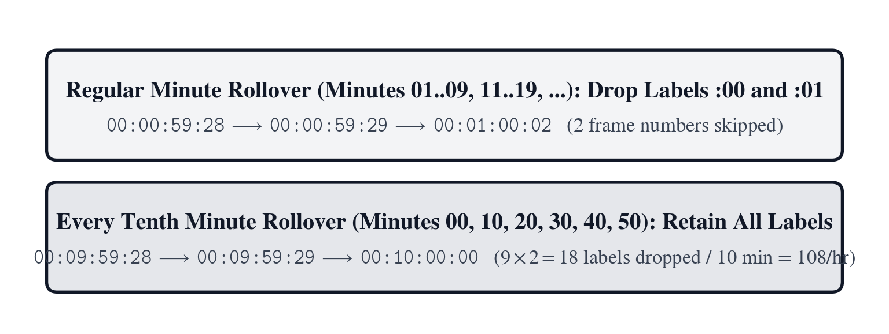
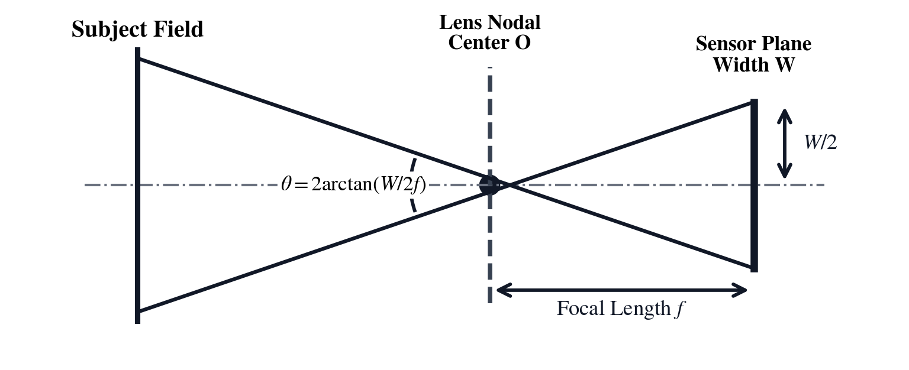
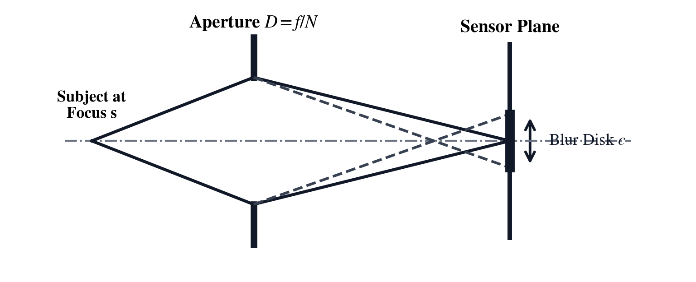
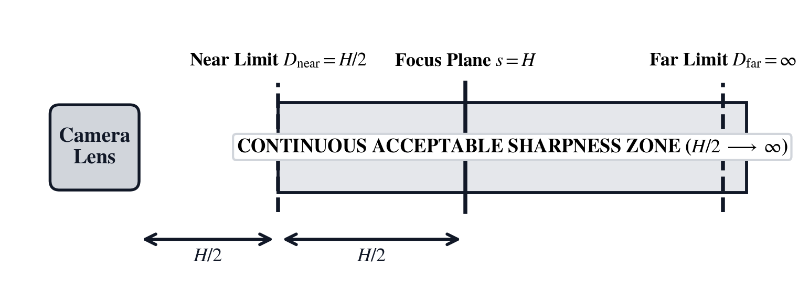
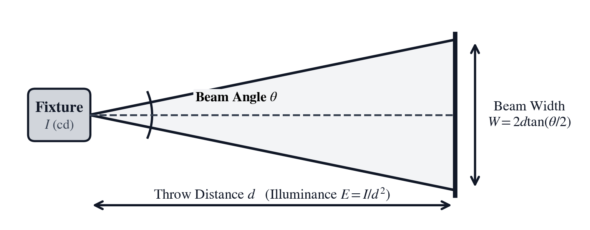
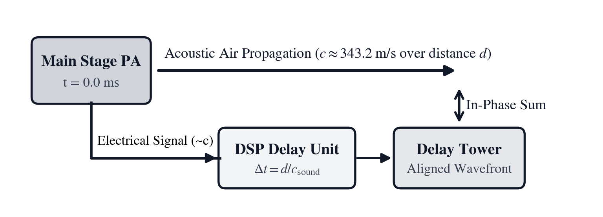

Unit IV: Cinema Optics, Broadcast Timecode & Live Acoustics
A live broadcast cannot pause. Sixty fields per second leave the transmission tower whether the tape machine is cued or not. In film and broadcast production, time is not an elastic continuum; it is quantized into discrete mechanical frames and microsecond clock pulses. That modern discipline of frame-accurate timing and optical precision traces its lineage back to June 15, 1878, at Leland Stanford's Palo Alto Stock Farm in California, where Eadweard Muybridge lined a whitewashed shed with twenty-four wet-plate stereoscopic cameras spaced twenty-one inches apart. Across the dirt track, fine linen threads stretched from each lens shutter to an electrical contact switch. When the trotting mare Sallie Gardner dashed through the threads at thirty-six feet per second, she tripped the electromagnetic shutters in rapid succession, freezing slices of motion shorter than one two-thousandth of a second. Projected through his spinning glass zoopraxiscope, those discrete still frames fused in the human visual cortex into continuous, living motion.
Human vision perceives apparent motion through two complementary physiological mechanisms: retinal persistence, in which a fleeting optical stimulus lingers on the photoreceptor cells for roughly a sixteenth of a second, and the phi phenomenon, an interpretive cortical process whereby the brain bridges the spatial gap between successive images. When discrete still images flash before the retina at rates exceeding sixteen images per second, individual flashes blur into continuous perception; when interrupted by brief intervals of darkness at thirty to forty cycles per second, the flicker fusion threshold is surpassed and the flickering sensation disappears.
Half a century later, the 1927 Sound Film Revolution—heralded by Warner Brothers' release of The Jazz Singer—abruptly ended the freewheeling silent era. Prior to synchronized sound, cinema lived in a fluid temporal realm: hand-cranked cameras and theater projectors ran at variable speeds ranging from 16 to 22 frames per second (fps). Projectionists routinely accelerated the hand crank to squeeze extra evening screenings into a theater schedule or decelerated it to heighten melodrama. The commercial introduction of synchronized Vitaphone sound-on-disc systems—which mechanically interlocked sixteen-inch, 33-1/3 rpm lacquer phonograph discs with the projector motor via physical drive shafts—and Fox Movietone optical sound-on-film abruptly terminated this variable-speed practice. A velocity drift of merely three percent produced catastrophic pitch warble in musical scores and rendered dialogue unintelligible, while transport flutter across the optical exciter lamp distorted the audio track beyond recognition. To prevent acoustic pitch warble, maintain stable frequency response, and guarantee lip synchronization, the global cinema industry was forced to abandon variable hand-cranking and mandate an absolute, unyielding standard of exactly twenty-four frames per second (\(24\text{ fps}\)), establishing the foundational temporal quantum of modern cinema.
While cinema remained anchored to integer mechanical sprockets, the birth of color television in 1953 forced broadcast engineers on the National Television System Committee (NTSC, spoken as N-T-S-C) into a subtle frequency compromise. Since the 1940s, North American monochrome television had scanned thirty frames per second, locked to the \(60\text{ Hz}\) alternating-current utility grid so power-supply hum bars would remain stationary on cathode-ray tubes. Squeezing a \(3.579545\text{ MHz}\) chrominance subcarrier beside the \(4.5\text{ MHz}\) frequency-modulated audio carrier threatened to create beat interference on millions of existing black-and-white sets. To prevent that interference, engineers reduced the horizontal line rate and frame rate by one part in a thousand (\(1000/1001\)). Slowing the video frame rate to \(30/1.001 \approx 29.97003\text{ fps}\) caused a thirty-frame-per-second counter to fall \(3.6\text{ seconds}\) (\(108\text{ frames}\)) behind atomic wall-clock time every hour. That drift motivated the Society of Motion Picture and Television Engineers (SMPTE, spoken as simp-tee) in 1967 to invent mixed-radix timecode and Drop-Frame (DF, spoken as D-F) label reconciliation.
Capturing and projecting a story across space demands an equally tight coordination between refractive optics and human sensory physiology. While the visual cortex forgives discrete temporal sampling at twenty-four frames per second, its spatial acuity and brightness adaptation operate over delicate geometric and logarithmic scales. Light rays refracted through a rectilinear cinema prime project a three-dimensional scene onto a flat Super 35 or Full-Frame silicon sensor across an angular field of view. Meanwhile, object points outside the plane of focus spread into blur disks whose permissible diameter—the Circle of Confusion (\(C\))—sets the hyperfocal distance and conjugate depth-of-field limits. Simultaneously, camera assistants and lighting gaffers balance iris f-stops, rotary shutter angles, neutral-density glass, and blackbody color temperatures along base-two Exposure Value stops and micro-reciprocal degrees. A striking mathematical isomorphism unites photometry, acoustics, and spectroscopy. A neutral-density filter of optical density \(D = 0.3010 \times \text{stops} = -\log_{10}(T_{\text{trans}})\) obeys the same base-ten exponential attenuation law as Beer–Lambert UV-Vis absorbance \(A = \varepsilon b c = -\log_{10}(I/I_0)\) in wet-lab chemistry (Unit VI) and free-space path loss in radio-frequency link budgets (Unit V).
Human hearing reverses the visual perceptual hierarchy, trading coarse angular localization for millisecond temporal discrimination. Between 1895 and 1898, Harvard physicist Wallace Clement Sabine worked through quiet midnight hours hauling hundreds of Sanders Theatre seat cushions into the reverberant Fogg Lecture Hall. By timing the decay of a \(512\text{ Hz}\) organ pipe with a chronograph, he formulated the architectural reverberation law. Fifty years later, Helmut Haas demonstrated the precedence effect in 1949. When two identical sound waves arrive at a listener's ears within a window of \(1\text{ ms}\) to \(30\text{ ms}\), the auditory cortex fuses them into a single sonic image anchored to the first-arriving wavefront.
Picking up directly from Unit III's discrete timer prescalers, auto-reload registers, analog-to-digital quantization steps, and pulse-width-modulated clock synthesis, Unit IV expands outward from digital logic into continuous physical fields: capturing optical wave fronts through precision rotary shutter exposures, synchronizing multi-camera broadcast feeds to the exact SMPTE frame boundary, and shaping acoustic wave propagation across live concert arenas. The SC-24 Cinema, Broadcast, Optics & Live Acoustics calculator unites frame-accurate timecode, thin-lens optics, and acoustic wave propagation for production and post-production engineering. Three production case studies test these optical, temporal, and acoustic principles under live deadline pressure:
In Chapter 10, we reconcile a live multi-reel documentary broadcast, correcting an accumulated NTSC drop-frame drift and synchronizing a high-speed slow-motion insert.
In Chapter 11, we hold critical focus on a Super 35 Steadicam close-up at dusk, balancing rotary shutter angles, neutral density filtration, and Mired color-temperature shift gels.
In Chapter 12, we time-align a stadium delay tower against temperature-dependent sound propagation, calculating Haas precedence delays, acoustic power decay, and room reverberation times.
Chapter 10: The Missing Three-Point-Six Seconds at the Broadcast Desk
In live television, there is no such thing as an approximate second. Satellite transponders, automated regional commercial inserters, and broadcast master control switch on the exact millisecond. When two documentary reels cut on a non-linear timeline—Reel A running 01:14:28:12 and Reel B running 00:52:45:20 at nominal \(30\text{ fps}\)—are joined with a high-speed wildlife insert shot at \(120\text{ fps}\), a critical discrepancy appears on the broadcast rundown. The archival field camera that shot the primary interview reel had its timecode generator set to \(29.97\text{ fps}\) Non-Drop-Frame (NDF) instead of broadcast Drop-Frame (DF).
A Non-Drop-Frame counter advances thirty nominal frame labels for every second, but NTSC color video runs at \(29.970\text{ fps}\). Over an hour of television, that small ratio (\(1000/1001\)) accumulates \(3.6\text{ seconds}\) of silent wall-clock lag against real earth rotation. By the end of a two-hour documentary, an uncompensated timeline overshoots the satellite window by more than seven seconds, cutting the closing credits off mid-sentence across two hundred local affiliate stations.
To rescue the broadcast rundown before air, broadcast engineer Julian Scott and assistant Zoe Alvarez must sum the two main reel addresses across mixed sexagesimal and frame radices, convert between packed timecode (HH.MMSSFF), total integer frames, and decimal seconds, scale the \(120\text{ fps}\) wildlife insert to \(24\text{ fps}\) screen duration, and apply the \(1000/1001\) NTSC pulldown ratio and SMPTE Drop-Frame counting rules to match the satellite window.
Mixed-Radix Frame Indexing and Overcranked Time Scaling
Every motion-picture camera and broadcast deck records time as a discrete sequence of still images. Translating between the human language of hours, minutes, and seconds and the machine language of integer frame pulses requires a mixed-radix coordinate system coupled with linear rate scaling.
Sexagesimal Timecode Rollovers and Integer Frame Conversion
In motion-picture storytelling, time is not a smooth, floating-point continuum; it is an indivisible physical cadence of discrete photographic frames. In physical celluloid projection, a 35mm film strip moves through the projector gate via a mechanical Geneva drive or Maltese cross mechanism that advances the film by exactly four perforations per frame. A mechanical claw pulls the film down, a registration pin seats into a sprocket hole to lock the image rock-steady, the rotary shutter exposes the frame, and the cycle repeats. Because a single frame cannot be split in half without slicing through an actor's face, the frame is the indivisible, irreducible quantum of cinema.
When television engineers developed electronic video tape recording in the 1950s and 1960s—culminating in the 2-inch quadruplex videotape machines—they faced an identical constraint. Video tape carries discrete helical scan tracks corresponding to individual fields and frames, locked to electronic vertical blanking intervals. If an editor attempted to keep time in decimal seconds (such as \(0.033333\dots\text{ s}\) per frame), cumulative floating-point rounding errors would drift across an edit decision list (EDL). After hundreds of splices, cuts, and commercial inserts, the accumulated round-off would cause audio-to-video synchronization to slip, resulting in visible lip-sync errors.
To give every individual frame on a reel a unique, human-readable address across cameras, dual-system field audio recorders, and editing timelines, the Society of Motion Picture and Television Engineers standardized an eight-digit mixed-radix index known as SMPTE Timecode, formatted as \(\mathbf{HH:MM:SS:FF}\) (representing Hours, Minutes, Seconds, and Frames).
In this four-field representation, the first three fields obey sexagesimal Babylonian clock arithmetic—sixty seconds per minute (\(\text{SS} \in [00, 59]\)) and sixty minutes per hour (\(\text{MM} \in [00, 59]\))—whereas the rightmost frame field (FF) counts modulo the nominal integer frame rate \(R\), cycling from \(00\) up to \(R - 1\) (such as \(00\text{–}23\) for cinema \(24\text{ fps}\), \(00\text{–}24\) for European PAL/SECAM \(25\text{ fps}\), or \(00\text{–}29\) for North American \(30\text{ fps}\) video). On the SC-24, a timecode address is entered as a packed decimal literal HH.MMSSFF (so 01:14:28:12 is keyed as 1.142812).
To translate between human clock-face notation and raw discrete frame counts, the time address is decomposed hierarchically. Hours are multiplied by thirty-six hundred seconds, minutes by sixty seconds, and whole seconds are added directly, while the trailing frame counter is divided by the project frame rate \(R\) to represent the fractional second. Multiplying that continuous time duration by the frame rate accumulates the exact total number of discrete frames exposed since midnight:
Eq. 10.1 — Sexagesimal Timecode Expansion and Integer Frame Accumulation $\(S = 3600 \cdot \text{HH} + 60 \cdot \text{MM} + \text{SS} + \frac{\text{FF}}{R}\)$ $\(F = S \times R = (3600 \cdot \text{HH} + 60 \cdot \text{MM} + \text{SS}) R + \text{FF}\)$
Here \(S\) is the elapsed duration in seconds (\(\text{s}\)), \(R\) is the frame rate in frames per second (\(\text{fps}\)), and \(F\) is the exact count of frames since 00:00:00:00. When adding ([g] [+TC]) or subtracting ([g] [-TC]) two packed timecode durations \(A\) and \(B\), arithmetic proceeds from right to left across the four radices, carrying \(+1\text{ second}\) whenever the frame sum reaches or exceeds \(R\), carrying \(+1\text{ minute}\) whenever seconds reach \(60\), and carrying \(+1\text{ hour}\) whenever minutes reach \(60\).
Consider the two documentary reels sitting on the broadcast desk at a nominal framebase of \(R = 30\text{ fps}\): Reel A spans 01:14:28:12 (1.142812) and Reel B spans 00:52:45:20 (0.524520). Summing the rightmost frame fields gives \(12 + 20 = 32\text{ frames}\). Dividing by \(R = 30\) leaves a remainder of :02 frames and carries \(+1\text{ s}\) into the seconds column. Summing the seconds column gives \(28 + 45 + 1 = 74\text{ s}\), which leaves :14 seconds and carries \(+1\text{ min}\). Summing the minutes column gives \(14 + 52 + 1 = 67\text{ min}\), which leaves :07 minutes and carries \(+1\text{ hr}\). Summing the hours column gives \(01 + 00 + 1 = 02\text{ hr}\), yielding a combined master reel address of 02:07:14:02 (2.071402). Expanded into total seconds and frames at \(R = 30\text{ fps}\), Reel A contains \(3600(1) + 60(14) + 28 + 12/30 = 4468.40\text{ s}\) (\(134{,}052\text{ frames}\)) and Reel B contains \(60(52) + 45 + 20/30 = 3165.667\text{ s}\) (\(94{,}970\text{ frames}\)), whose integer sum is \(229{,}022\text{ frames}\), or \(7634.067\text{ nominal seconds}\).
Longitudinal Timecode Modulation and Biphase Mark Encoding
In physical broadcast facilities and multi-camera film sets, timecode does not exist merely as an abstract mathematical integer; it is transmitted physically across copper XLR cables, BNC coaxial lines, and dedicated audio tracks as an analog audio-frequency signal known as Longitudinal Timecode (LTC, standardized under SMPTE 12M).
To transmit eighty binary bits per video frame—encoding thirty-two bits of binary-coded decimal (BCD) time address, thirty-two user-defined metadata bits (for production reel numbers, date stamps, and take numbers), and a sixteen-bit unique synchronization word (0011 1111 1111 1101)—SMPTE engineers adopted Biphase Mark Code (BMC, also known as Manchester I or frequency modulation). In BMC modulation, every bit cell begins with a mandatory voltage transition (either high-to-low or low-to-high). A binary 0 contains no further transitions within the cell, completing its duration at a fundamental frequency equal to the frame rate multiplied by eighty (\(1920\text{ Hz}\) at \(24\text{ fps}\), or \(2400\text{ Hz}\) at \(30\text{ fps}\)). A binary 1 forces an additional transition exactly at the midpoint of the cell period, doubling the instantaneous frequency to \(3840\text{ Hz}\) or \(4800\text{ Hz}\).
This modulation architecture solves three severe physical transport dilemmas: 1. DC Balance and Transformer Coupling: Because every bit cell contains one or two symmetrical transitions, the signal contains zero direct-current (DC) bias, allowing LTC to pass cleanly through standard audio isolation transformers, microphone preamplifiers, and distribution amplifiers without baseline wander. 2. Polarity Invariance: The decoder detects transitions rather than absolute voltage levels. If an audio cable is cross-wired (inverting pins 2 and 3 on an XLR line), the biphase transitions remain mathematically identical, guaranteeing that timecode readers never invert bit values. 3. Bi-Directional Speed Invariance: The fixed sixteen-bit sync word at the end of each frame allows the reader's phase-locked loop (PLL) to determine both tape direction (forward versus reverse shuttle) and velocity. Because the reader measures the ratio of the half-bit period to the full-bit period rather than absolute time, LTC can be decoded reliably across an astonishing speed range—from tape shuttling at one-tenth of normal playback speed up to fast-forward spooling at fifty times normal speed (\(120\text{ kHz}\) carrier frequency).
When videotape transports pause on a single still frame, however, the magnetic tape stops moving across the stationary audio head, causing LTC playback to collapse to zero volts. To maintain frame-accurate positioning during pause and slow-motion jogging, engineers invented Vertical Interval Timecode (VITC, spoken as vit-see). VITC encodes the identical eighty-bit timecode payload into two invisible horizontal scan lines (lines 14 and 16 in NTSC, or lines 19 and 21 in PAL) embedded directly within the vertical blanking interval (VBI) of the video raster. Because the spinning video drum continues to sweep past the tape during pause, VITC delivers rock-solid frame addresses down to zero velocity.
Variable Frame Rate Overcranking and Speed Ramp Ratios
In early hand-cranked silent cameras, an operator who turned the crank faster than normal captured more frames per second than the theater projector later replayed, stretching brief physical events into slow motion on screen—a craft term preserved today as overcranking. Conversely, cranking slower than the projection rate compressed long events into fast-motion time-lapse, known as undercranking.
Legendary silent cinematographers such as Billy Bitzer—working alongside director D.W. Griffith on early masterworks—exploited variable cranking rates as an emotional paint palette. In comedic chase sequences or frantic Keystone Kops slapstick, Bitzer deliberately undercranked down to \(12\text{ or }14\text{ fps}\); when replayed at the standard nickelodeon rate of \(16\text{ to }18\text{ fps}\), the movement appeared comically frenetic and jerky. When shooting intimate melodrama, emotional grief, or majestic cavalry charges, operators deliberately overcranked to \(24\text{ or }28\text{ fps}\), so that subsequent projection introduced a subtle, dreamy weight and gravitas to the scene.
Because every captured frame must be displayed during playback, the total frame count \(F_{\text{total}}\) is conserved across timebases: $\(F_{\text{total}} = R_{\text{shoot}} \cdot t_{\text{shoot}} = R_{\text{play}} \cdot t_{\text{play}}\)$ The speed ramp magnification factor is simply the ratio of acquisition frame rate to projection frame rate: capturing at five times the playback rate stretches physical time fivefold on screen. Because higher frame rates force each individual frame shutter to open for a shorter fraction of a second, the camera sensor receives fewer photons per frame. In photographic exposure, each factor-of-two reduction in integration time represents one full stop of exposure loss; taking the base-two logarithm of the speed ratio yields the exact exposure deficit in Exposure Value stops that must be compensated on set:
Eq. 10.2 — Overcrank Speed Magnification and Shutter Exposure Deficit $\(M_{\text{ramp}} = \frac{R_{\text{shoot}}}{R_{\text{play}}}\)$ $\(\Delta\text{EV}_{\text{fps}} = \log_2(M_{\text{ramp}}) = \log_2\left(\frac{R_{\text{shoot}}}{R_{\text{play}}}\right)\)$
In these relations, \(R_{\text{play}}\) is the base delivery timeline frame rate staged in Register \(Y\) (such as \(24\text{ fps}\)), \(R_{\text{shoot}}\) is the camera sensor acquisition rate staged in Register \(X\) (such as \(60\text{ fps}\) or \(120\text{ fps}\)), \(M_{\text{ramp}}\) is the dimensionless slow-motion playback factor deposited in Register \(X\) by [FPS], and \(\Delta\text{EV}_{\text{fps}}\) is the exposure stop loss deposited in Register \(Y\) by [FPS] (because raising the frame rate at a fixed rotary shutter angle shortens each frame's integration time proportionally).
In modern high-speed digital cinematography, this photon deficit presents a serious optical challenge. When filming at \(120\text{ fps}\), each frame's exposure window is reduced by a factor of five compared to \(24\text{ fps}\). With a standard \(180^\circ\) shutter, the physical integration time drops from \(1/48\text{ s}\) down to \(1/240\text{ s}\) (\(4.17\text{ ms}\)). To maintain exposure balance without pushing sensor gain into noisy analog amplification, the lighting director must either flood the set with five times the luminous flux (\(+2.32\text{ stops}\) of illumination) or the camera assistant must open the lens iris by \(2.32\text{ stops}\)—for example, moving from \(f/5.6\) wide open to \(f/2.5\), which significantly narrows the permissible depth of field.
Furthermore, high-speed acquisition interacts intimately with sensor readout architecture. In electronic rolling shutter sensors, the rows of pixels are reset and read out sequentially from top to bottom. If the total sensor row readout time (\(t_{\text{readout}}\)) approaches the frame period \(1 / R_{\text{shoot}}\), fast-moving subjects—such as the vibrating wings of a hummingbird or the spinning propeller of a stunt aircraft—exhibit geometric skew and spatial jello distortion. High-speed specialized cinema cameras therefore utilize dedicated parallel readout pipelines or global electronic shutters, where every photosite integrates and transfers charge simultaneously into shielded analog memory nodes, eliminating temporal skew at the expense of dynamic range and fill factor.
For the documentary's high-speed wildlife B-roll shot—where a peregrine falcon strike was captured at \(R_{\text{shoot}} = 120\text{ fps}\) for \(t_{\text{shoot}} = 1.50\text{ s}\), yielding \(F_{\text{total}} = 120 \times 1.50 = 180\text{ frames}\)—conforming those \(180\text{ frames}\) onto a theatrical \(R_{\text{play}} = 24\text{ fps}\) timeline (24 [ENTER] 120 [FPS]) stretches the time axis by \(M_{\text{ramp}} = 120 / 24 = \mathbf{5.0\times}\) in Register \(X\) (with an overcrank exposure loss of \(\log_2(5) \approx \mathbf{2.3219\text{ EV}}\) in Register \(Y\), or \(60 / 24 = \mathbf{2.5\times}\) and \(\log_2(2.5) \approx \mathbf{1.3219\text{ EV}}\) for a \(60\text{ fps}\) shot), producing a screen playback duration of \(t_{\text{play}} = 180 / 24 = \mathbf{7.50\text{ s}}\) (00:00:07:12, or 0.000712 at \(24\text{ fps}\)). If that same \(180\text{-frame}\) burst is dropped directly onto the network's \(30\text{ fps}\) broadcast master timeline, the time magnification becomes \(M_{\text{ramp}} = 120 / 30 = \mathbf{4.0\times}\) and the insert runs for \(t_{\text{play}} = 180 / 30 = \mathbf{6.00\text{ s}}\) (00:00:06:00).
NTSC Subcarrier Pulldown and Drop-Frame Reconciliation
When a broadcast facility operates on North American fractional frame rates (\(23.976\text{ fps}\), \(29.97\text{ fps}\), or \(59.94\text{ fps}\)), the rate at which frames pass through the switcher no longer equals a whole integer per second. Reconciling integer frame labels with continuous atomic time requires tracking the \(1000/1001\) frequency offset ([f] [DF]) and applying SMPTE's deterministic label-skipping algorithm.
The 1953 Color Subcarrier Offset and Wall-Clock Drift
When the National Television System Committee convened in 1953 to establish the standard for North American color television, they were constrained by a severe regulatory mandate: complete backward compatibility. Ten million monochrome cathode-ray tube (CRT) receivers were already installed in American households. A color broadcast signal had to display cleanly in full color on new color receivers while producing an artifact-free black-and-white image on existing monochrome sets, all squeezed inside the exact same \(6\text{ MHz}\) radio-frequency channel allocation.
In the original monochrome standard established in 1941, the picture scanned 525 horizontal lines per frame, 30 frames per second, interlaced into 60 fields per second. The vertical field rate was deliberately locked to the \(60\text{ Hz}\) AC power line grid so that any residual 60 Hz hum ripple from poorly filtered power supplies would produce a stationary horizontal bar rather than a wandering shadow across the screen. Multiplying 525 lines by 30 frames gave an exact horizontal line scanning frequency of: $\(f_H = 525 \times 30 = 15{,}750\text{ Hz}\)$ The audio carrier was frequency-modulated onto an RF subcarrier positioned exactly \(4.5\text{ MHz}\) above the visual carrier.
To transmit color, engineers needed to interleave two color-difference signals (chrominance) within the luminance spectrum. Under the Fourier analysis of video signals developed by Pierre Mertz and Frank Gray in 1934, television luminance energy is not distributed evenly across the channel; rather, it clusters in discrete harmonic bunches centered on integer multiples of the horizontal line frequency \(f_H\). Between these harmonic peaks lie vacant spectral valleys. By choosing a chrominance subcarrier frequency (\(f_{\text{sc}}\)) that was an odd half-multiple of the horizontal line rate, the color subcarrier harmonics would interleave into the empty spaces between the luminance harmonics. On a monochrome screen, the color subcarrier would invert its phase on alternate frames, visually cancelling out into fine, imperceptible dot crawl.
However, a serious electrical conflict arose between the color subcarrier and the \(4.5\text{ MHz}\) audio carrier. Non-linearities in receiver mixer tubes generated a beat frequency between the sound carrier and the color subcarrier equal to their difference: $\(f_{\text{beat}} = 4.5\text{ MHz} - f_{\text{sc}}\)$ If this beat frequency were random or steady, it produced a coarse, crawling moiré interference pattern across the screen. To make the beat pattern invisible, the beat frequency itself had to be an odd multiple of half the line rate: $\(4{,}500{,}000 - f_{\text{sc}} = \frac{n}{2} f_H\)$ Engineers chose the color subcarrier to be the 455th harmonic of half the line rate: $\(f_{\text{sc}} = \frac{455}{2} f_H\)$ Substituting this into the beat equation: $\(4{,}500{,}000 - \frac{455}{2} f_H = \frac{n}{2} f_H \implies 4{,}500{,}000 = \left(\frac{455 + n}{2}\right) f_H\)$ Choosing \(n = 117\) (the lowest odd integer that placed \(f_{\text{sc}}\) high enough in the channel to minimize luminance interference) gave: $\(4{,}500{,}000 = \left(\frac{455 + 117}{2}\right) f_H = \left(\frac{572}{2}\right) f_H = 286 f_H\)$ This locked the horizontal line rate directly to the fixed \(4.5\text{ MHz}\) sound carrier: $\(f_H = \frac{4{,}500{,}000}{286} = \frac{2{,}250{,}000}{143} \approx 15{,}734.265734\text{ Hz}\)$ Dividing this new line rate by the original monochrome rate of \(15{,}750\text{ Hz}\) revealed the required reduction factor: $\(\frac{15{,}734.265734}{15{,}750} = \frac{1000}{1001}\)$ Because the number of lines per frame remained fixed at 525, reducing the line rate by \(1000/1001\) dragged the vertical field rate down from \(60\text{ Hz}\) to \(60 / 1.001 \approx 59.94006\text{ Hz}\), and pulled the video frame rate down from \(30\text{ fps}\) to: $\(R_{\text{NTSC}} = \frac{30}{1.001} = \frac{30{,}000}{1001} \approx 29.97002997\text{ fps}\)$ The resulting color subcarrier was: $\(f_{\text{sc}} = \frac{455}{2} \times \frac{4{,}500{,}000}{286} = \frac{315}{88}\text{ MHz} \approx 3.57954545\dots\text{ MHz}\)$ This \(3.579545\text{ MHz}\) subcarrier compromise saved the burgeoning television industry billions of dollars in retrofitting costs, but it introduced a subtle, permanent temporal asymmetry into broadcast engineering.
Because the video frame rate is dialed back by exactly one part in a thousand, each broadcast second takes one thousand and one thousandths of a physical second to pass. A counter that increments thirty whole frames per second therefore lags behind atomic wall-clock time by exactly one tenth of a percent: one second of drift every thousand seconds, accumulating \(3.6\text{ seconds}\) of wall-clock lag across every nominal broadcast hour:
Eq. 10.3 — NTSC Color Pulldown and Wall-Clock Drift Rate $\(R_{\text{NTSC}} = \frac{30}{1.001} = \frac{30{,}000}{1001} \approx 29.97003\text{ fps}\)$ $\(\Delta t_{\text{drift}} = t_{\text{nominal}} \times 0.001 = t_{\text{real}} - t_{\text{nominal}}\)$
In this pulldown relationship, \(t_{\text{nominal}} = F / 30\) is the apparent duration indicated by a Non-Drop-Frame (NDF) counter that increments one second every \(30\) frames, \(t_{\text{real}} = F / R_{\text{NTSC}}\) is the true wall-clock elapsed time in seconds ([f] [DF]), and \(\Delta t_{\text{drift}} = t_{\text{real}} - t_{\text{nominal}}\) is the cumulative clock error. Similarly, when theatrical \(24\text{ fps}\) cinema masters are transferred to NTSC video via \(2:3\) telecine pulldown, the cinema frame rate is pulled down by \(1000/1001\) on the stack (24 [ENTER] 1.001 [÷]) to \(24 / 1.001 \approx 23.976024\text{ fps}\).
In telecine \(2:3\) pulldown, four cinema frames are expanded into ten television interlaced fields (five video frames) to convert \(24\text{ fps}\) into \(30\text{ fps}\) (or \(23.976\text{ fps}\) to \(29.97\text{ fps}\)). The first film frame is scanned into two video fields (an "odd" field and an "even" field), while the second film frame is scanned into three video fields (odd, even, odd). This alternating cadence (\(2\text{ fields}, 3\text{ fields}, 2\text{ fields}, 3\text{ fields}\)) maps four original film frames across five video frames: $\(4\text{ film frames} \times 2.5\text{ fields/frame} = 10\text{ video fields} = 5\text{ video frames}\)$ The time expansion ratio is exactly \(5 / 4 = 1.25\).
Because each physical NTSC video frame lasts \(1.001 / 30 \approx 33.3667\text{ ms}\) instead of \(33.3333\text{ ms}\), every \(1000\text{ seconds}\) of nominal Non-Drop-Frame timecode actually takes \(1001\text{ seconds}\) of wall-clock time to play out. Over a nominal one-hour program (\(t_{\text{nominal}} = 3600\text{ s}\), or \(F = 3600 \times 30 = 108{,}000\text{ frames}\)), the true elapsed wall-clock duration is \(t_{\text{real}} = 3600 \times 1.001 = \mathbf{3603.6\text{ s}}\). When the Non-Drop-Frame studio monitor reads 01:00:00:00, the actual broadcast has run \(\Delta t_{\text{drift}} = +3.6\text{ seconds}\) (\(3.6\text{ s} \times 30\text{ fps} = \mathbf{108\text{ frames}}\)) past the top of the hour. Across our documentary's two-reel nominal runtime of \(t_{\text{nominal}} = 7634.067\text{ s}\) (02:07:14:02), playing those \(229{,}022\text{ frames}\) at \(29.97003\text{ fps}\) consumes \(t_{\text{real}} = 7634.067 \times 1.001 = \mathbf{7641.701\text{ s}}\) of real time—an accumulated drift of \(+7.634\text{ seconds}\) (\(229\text{ frames}\)).
Analog Chrominance Quadrature and Differential Phase Sensitivity
The \(3.579545\text{ MHz}\) color subcarrier compromise highlights the extraordinary sensitivity of analog quadrature modulation. To convey both color saturation (how vivid the hue is) and color tint (whether skin appears natural peach or sickly green), the NTSC standard modulates two color-difference signals—\(I\) (in-phase) and \(Q\) (quadrature)—onto the subcarrier using quadrature amplitude modulation (QAM): $\(S_{\text{color}}(t) = I(t) \cos(2\pi f_{\text{sc}} t) + Q(t) \sin(2\pi f_{\text{sc}} t)\)$ To synchronize the local oscillator in millions of living room televisions, a reference burst of eight to ten cycles of the unmodulated subcarrier is transmitted immediately following the horizontal sync pulse on the "back porch" of every horizontal line.
The receiver compares the phase of the arriving chrominance wave against this reference color burst. A phase displacement of zero degrees represents purplish-blue, ninety degrees represents yellow-green, and fifty-seven degrees represents human skin tones. This phase sensitivity is unforgiving: an analog transmission link that introduces a phase delay error of merely five degrees shifts skin tones from natural pink into pale olive green. Because long-distance coaxial cable links and microwave repeaters suffered from non-linear phase shifts as picture brightness varied (differential phase and differential gain), color consistency frequently drifted along broadcast networks—prompting television technicians to humorously re-interpret the NTSC acronym as "Never Twice the Same Color".
The SMPTE Drop-Frame Counting Rule Across Minute Boundaries
To force the eight-digit timecode display to match wall-clock time at \(29.97\text{ fps}\) without cutting or deleting a single recorded image from the video stream, SMPTE invented Drop-Frame ([f] [DF]) timecode. Because an NDF counter accumulates \(+108\text{ extra frames}\) of lag every hour (\(60\text{ minutes}\)), the counter must skip ahead by \(108\) numerical frame labels per hour, or \(108 / 60 = 1.8\text{ frame labels per minute}\). Since a timecode display can only skip whole integer labels, skipping \(2\text{ frame labels}\) at the start of every minute would drop \(2 \times 60 = 120\text{ labels}\) per hour—overcorrecting by \(12\text{ labels}\). Dropping \(2\text{ labels}\) on nine out of every ten minutes removes \(2 \times 9 = 18\text{ labels}\) every ten minutes, or \(18 \times 6 = 108\text{ labels}\) per hour.
To maintain perfect synchronization without discarding recorded footage, the display skips frame label numbers rather than physical images. Skipping two numbers on nine minutes out of ten, while retaining every number on decade minutes (zero, ten, twenty, thirty, forty, and fifty), drops exactly one hundred eight labels an hour. The physical frame index is evaluated by accumulating one hundred seven thousand eight hundred ninety-two frames per hour, seventeen hundred ninety-eight frames per minute, and adding back two frames for every decade minute boundary:
Eq. 10.4 — SMPTE Drop-Frame Label Skip and Physical Frame Index $\(N_{\text{dropped}} = 2 \times \left(M_{\text{total}} - \left\lfloor \frac{M_{\text{total}}}{10} \right\rfloor\right)\)$ $\(F_{\text{DF}} = 107{,}892 \cdot \text{HH} + 1798 \cdot \text{MM} + 2\left\lfloor \frac{\text{MM}}{10} \right\rfloor + 30 \cdot \text{SS} + \text{FF}\)$
Here \(M_{\text{total}} = 60 \cdot \text{HH} + \text{MM}\) is the total number of elapsed minute boundaries, \(N_{\text{dropped}}\) is the cumulative count of skipped frame numbers (labels :00 and :01 omitted at the start of every minute except minutes 00, 10, 20, 30, 40, and 50), and \(F_{\text{DF}}\) is the exact physical frame index corresponding to a Drop-Frame address HH:MM:SS;FF (written by convention with a semicolon before the frame field).

At the end of the first minute, a Drop-Frame counter advances directly from 00:00:59;29 to 00:01:00;02, skipping the numbers :00 and :01 while every recorded video frame remains intact. At the tenth minute boundary, it counts normally from 00:09:59;29 to 00:10:00;00. Over one full hour (01:00:00;00), \(M_{\text{total}} = 60\) and \(N_{\text{dropped}} = 2(60 - 6) = 108\text{ dropped labels}\), so 01:00:00;00 corresponds to physical frame \(F_{\text{DF}} = 108{,}000 - 108 = \mathbf{107{,}892\text{ frames}}\). At the true NTSC rate of \(30{,}000 / 1001\text{ fps}\), those \(107{,}892\text{ frames}\) occupy \(107{,}892 \times 1.001 / 30 = \mathbf{3599.9964\text{ s}}\), locking the studio timecode display to atomic time within \(3.6\text{ milliseconds}\) (\(0.1\text{ frame}\)) per hour.
Synchronizing Broadcast Timelines on the Stack and in the Solver Workspace
On the SC-24, packed HH.MMSSFF timecode arithmetic ([g] [+TC], [g] [-TC]), immediate frame-to-timecode conversions ([f] [▸FRM], [g] [▸TC]), overcrank playback and exposure scaling ([FPS]), and Drop-Frame drift scaling ([f] [DF]) work together seamlessly across any configured stack depth ([4-LV], [8-LV], or [INF] via [g] [FLAGS]) while logging cue points to the @CUES edit decision list in [g] [▦].
| Key / Solver | Mode | Inputs / Workspace Softkeys | Governing Expression |
|---|---|---|---|
[FPS] |
Immediate Stack | Register \(Y\): Base rate \(R_{\text{play}}\), Register \(X\): Capture rate \(R_{\text{shoot}}\) | \(X' = R_{\text{shoot}} / R_{\text{play}}\) (playback factor), \(Y' = \log_2(R_{\text{shoot}} / R_{\text{play}})\) (EV stop loss) |
[g] [+TC] |
Immediate Stack | Register \(Y\): HH.MMSSFF \(A\), Register \(X\): HH.MMSSFF \(B\) |
Mixed-radix sum \(A + B\) (logs cue to @CUES in [g] [▦]) |
[g] [-TC] |
Immediate Stack | Register \(Y\): HH.MMSSFF \(A\), Register \(X\): HH.MMSSFF \(B\) |
Mixed-radix difference \(A - B\) with sexagesimal/frame borrow |
[f] [▸FRM] |
Immediate Stack | Register \(Y\): Rate \(R\) (or \(24\text{ fps}\) default), Register \(X\): HH.MMSSFF |
Expands HH.MMSSFF into integer frame count \(F\) |
[g] [▸TC] |
Immediate Stack | Register \(Y\): Rate \(R\) (or \(24\text{ fps}\) default), Register \(X\): Frame count \(F\) | Packs integer frame count \(F\) into HH.MMSSFF |
[f] [DF] |
Immediate Stack | Register \(X\): Nominal NDF duration \(t_{\text{nom}}\) | Scales by \(1.001\) NTSC pulldown: \(t_{\text{real}} = 1.001 \cdot X\) |
[÷] / [×] |
Immediate Stack | Register \(Y\): Frames \(F\) or Seconds \(S\), Register \(X\): Rate \(R\) | \(S = F / R\) (seconds from frames); \(F = S \times R\) (frames from duration) |
Immediate Stack Trace: Packed Timecode Rollovers, Overcrank Scaling, and NTSC Drift
Reconciling multi-reel timecode, total frame counts, and NTSC drop-frame drift proceeds on the RPN stack:
| Keystroke | Register T | Register Z | Register Y | Register X | What Happens on the Stack |
|---|---|---|---|---|---|
1.142812 [ENTER] 0.524520 [g] [+TC] |
\(0\) | \(0\) | \(0\) | \(2.071402\) | Sum Reel A and Reel B across mixed radices to 02:07:14:02 (2.071402 at \(30\text{ fps}\)) |
30 [x⇄y] [f] [▸FRM] |
\(0\) | \(0\) | \(0\) | \(229022\) | Expand 02:07:14:02 at \(R = 30\text{ fps}\) into \(F = 229{,}022\text{ total frames}\) |
30 [÷] |
\(0\) | \(0\) | \(0\) | \(7634.0667\) | Convert frame total into nominal NDF seconds \(t_{\text{nom}} = 7634.067\text{ s}\) |
[f] [DF] |
\(0\) | \(0\) | \(0\) | \(7641.7007\) | Scale by \(1.001\) NTSC pulldown: true wall-clock runtime \(t_{\text{real}} = 7641.701\text{ s}\) |
24 [ENTER] 60 [FPS] |
\(0\) | \(7641.7007\) | \(1.3219\) | \(2.5000\) | Compute \(60/24 = 2.5\times\) slow-motion factor in \(X\) and \(1.3219\text{ EV}\) stop loss in \(Y\) |
Subtracting \(t_{\text{nom}} = 7634.067\text{ s}\) from \(t_{\text{real}} = 7641.701\text{ s}\) reveals the \(+7.634\text{ s}\) (\(229\text{-frame}\)) Non-Drop-Frame overrun, which the editor converts directly into a packed \(30\text{ fps}\) trim duration via 30 [ENTER] 229 [g] [▸TC] \(\to\) 0.000719 (00:00:07:19).
Conforming Mixed-Rate Live Broadcast Acts and Sizing Trims on the Stack
To see how the RPN stack handles complex broadcast schedules, consider the reconciliation of a three-segment live concert program scheduled for an exact one-hour satellite window (\(3600.0000\text{ s}\)). The edit sheet lists three segments cut at \(30\text{ fps}\) NDF:
- Segment 1 (Opening Act): 00:18:45:15 (0.184515)
- Segment 2 (Main Performance): 00:24:32:22 (0.243222)
- Segment 3 (Encore & Credits): 00:16:50:18 (0.165018)
The engineer must find the accumulated runtime across all three acts, expand to total physical frames, calculate the exact real-time playback duration under the \(29.97\text{ fps}\) NTSC broadcast carrier, evaluate the exact overrun against the \(3600.0\text{ s}\) window, and calculate the exact trim as a packed timecode string:
| Keystroke Sequence | Reg T | Reg Z | Reg Y | Reg X | Broadcast Studio Scenario Walkthrough |
|---|---|---|---|---|---|
0.184515 [ENTER] 0.243222 [g] [+TC] |
\(0\) | \(0\) | \(0\) | \(0.431807\) | Sum Segments 1 and 2: \(15+22=37\) frames (\(:07\), carry \(1\text{ s}\)); \(45+32+1=78\text{ s}\) (\(:18\), carry \(1\text{ min}\)) \(\implies\) 00:43:18:07 |
0.165018 [g] [+TC] |
\(0\) | \(0\) | \(0\) | \(1.000825\) | Add Segment 3: \(7+18=25\) frames; \(18+50=68\text{ s}\) (\(:08\), carry \(1\text{ min}\)); \(43+16+1=60\text{ min}\) (\(:00\), carry \(1\text{ hr}\)) \(\implies\) 01:00:08:25 |
30 [x⇄y] [f] [▸FRM] |
\(0\) | \(0\) | \(0\) | \(108265\) | Expand 01:00:08:25 at \(30\text{ fps}\) into total integer frames: \((3608 \times 30) + 25 = 108{,}265\text{ frames}\) |
30 [÷] |
\(0\) | \(0\) | \(0\) | \(3608.8333\) | Compute nominal NDF duration \(t_{\text{nom}} = 108{,}265 / 30 = 3608.8333\text{ s}\) |
[f] [DF] |
\(0\) | \(0\) | \(0\) | \(3612.4422\) | Scale by \(1.001\) pulldown: true real-time broadcast duration \(t_{\text{real}} = 3612.4422\text{ s}\) |
3600 [-] |
\(0\) | \(0\) | \(0\) | \(12.4422\) | Subtract \(3600.0\text{ s}\) satellite window: program exceeds slot by \(\Delta t = +12.4422\text{ s}\) of real time |
29.97003 [×] |
\(0\) | \(0\) | \(0\) | \(372.893\) | Multiply by \(29.97003\text{ fps}\) to find exact trim budget: \(372.9 \approx 373\text{ frames}\) |
30 [ENTER] 373 [g] [▸TC] |
\(0\) | \(0\) | \(30\) | \(0.001213\) | Convert \(373\text{ frames}\) at \(30\text{ fps}\) to packed trim timecode: 00:00:12:13 (0.001213) |
By executing this continuous cascade, the team determines that trimming exactly twelve seconds and thirteen frames (00:00:12:13) from the commercial intermission pads will bring the broadcast to an exact, frame-accurate top-of-the-hour conclusion without leaving a single trailing video line unsynchronized.
Evaluating Timeline Frame Budgets and Playback Durations on the Stack
Suppose the network's automated satellite switcher allocates a strict broadcast act window of \(S = 1650.0\text{ seconds}\) (\(27\text{ minutes } 30\text{ seconds}\) of real atomic time), and the editor needs to know the exact total frame budget \(F\) available when delivering at fractional NTSC \(R = 29.97003\text{ fps}\) versus cinema \(R = 23.976024\text{ fps}\), and then solve forward for the playback duration \(S\) of the \(F = 180\text{-frame}\) falcon slow-motion insert at \(R = 24\text{ fps}\). Evaluating \(F = S \times R\) and \(S = F / R\) directly on the postfix stack gives:
| Keystroke Sequence | Register T | Register Z | Register Y | Register X | What Happens on the Stack |
|---|---|---|---|---|---|
1650 [ENTER] 29.97003 [×] |
\(0\) | \(0\) | \(0\) | \(49450.55\) | Evaluate exact NTSC act capacity \(F = 1650 \times 29.97003 = \mathbf{49{,}450.55\text{ frames}}\) |
1650 [ENTER] 23.976024 [×] |
\(0\) | \(0\) | \(49450.55\) | \(39560.44\) | Re-evaluate at \(23.976\text{ fps}\) for cinema pulldown budget \(F = \mathbf{39{,}560.44\text{ frames}}\) |
180 [ENTER] 24 [÷] |
\(49450.55\) | \(49450.55\) | \(39560.44\) | \(7.5000\) | Solve for \(24\text{ fps}\) insert playback duration \(S = 180 / 24 = \mathbf{7.50\text{ s}}\) |
Because values remain intact on the stack, modifying delivery parameters recomputes the frame budget in two keystrokes without re-entering the segment duration.
Conforming the timeline to Drop-Frame timecode and inserting the \(7.5\text{-second}\) overcranked falcon sequence locked the program length to the satellite broadcast window with zero-frame drift, hitting the top-of-the-hour commercial break exactly as the network rubidium clock turned 8:00:00 p.m.
Try It on the Stack
Work through these five field problems on your calculator. Step-by-step keystroke solutions and register walkthroughs are provided in Appendix C.
- Two-Hour Feature NTSC Drift in Seconds and Packed Timecode: A feature film transfer runs for a nominal \(2\text{ hours}\) (\(7{,}200\text{ s}\)) on a \(30\text{ fps}\) Non-Drop-Frame timeline. Compute the total integer frame count, the true wall-clock duration at \(29.97\text{ fps}\) (\(29.970030\text{ fps}\)), and the accumulated drift in frames and packed SMPTE timecode.
- Commercial Act Trim via Packed Timecode Subtraction: A television program act must fit inside a
00:22:30:00(\(0.223000\)) broadcast window at \(30\text{ fps}\), but the current editor's cut runs00:24:12:18(\(0.241218\)). Find the required cut trim expressed as packed timecode and in total frames. - High-Speed Phantom Overcrank at 240 fps in the Timecode Solver: A tabletop liquid-pour commercial is photographed at an overcranked rate of \(R_{\text{shoot}} = 240\text{ fps}\) across a physical duration of \(S = 0.85\text{ s}\). Determine the total frames captured, and calculate the resulting screen playback duration when projected at the cinema standard rate of \(R_{\text{play}} = 23.976\text{ fps}\).
- Conforming 23.976 fps Archival Master to 29.970 fps via 2:3 Pulldown: An archival documentary master contains \(F = 64{,}800\text{ frames}\) photographed at \(R = 23.976024\text{ fps}\). Calculate its continuous duration in seconds, and determine the exact broadcast frame budget required when conformed to \(R_{\text{NTSC}} = 29.970030\text{ fps}\) via 2:3 pulldown telecine expansion.
- Drop-Frame Minute-Boundary Label Skip Audit: A sports highlight reel contains three takes running
00:04:15:10,00:07:42:25, and00:03:12:15at \(30\text{ fps}\). Calculate the accumulated program timecode, extract the integer minute count, and determine the exact number of skipped Drop-Frame timecode labels across that duration.
With the broadcast timeline locked to atomic wall-clock time and the high-speed inserts conformed frame-for-frame, the production leaves the digital broadcast suite and steps out onto location: mastering the physics of refractive optics, circles of confusion, and magic-hour exposure on the Steadicam close-up in Chapter 11.
Chapter 11: Holding Focus on the Steadicam Close-Up at Dusk
Pulling focus on an actor walking along a cliff path toward a moving Steadicam rig at dusk leaves a margin of error measured in centimeters. With an \(F = 50\text{ mm}\) prime lens opened wide to \(f/2.8\) in failing light on a Super 35 sensor (\(W = 24.89\text{ mm}\), allowable Circle of Confusion \(C = 0.025\text{ mm}\)), the depth of field around nominal focus distance \(s = 3.00\text{ m}\) (\(3000\text{ mm}\)) is barely forty centimeters deep. If the first assistant camera (1st AC) misses the mark by two inches, the actor's eyes soften into blur, and an entire sixty-second tracking shot is ruined.
Simultaneously, the operator plans to switch to an \(F = 35\text{ mm}\) wide-angle prime for a running tracking shot and asks what exact f-stop \(N\) will lock the hyperfocal distance at \(H = 4.50\text{ m}\) (\(4500\text{ mm}\)) so everything from \(2.25\text{ m}\) to the horizon remains sharp without pulling focus. Meanwhile, as the sun drops, the gaffer balances an HMI fixture with an interior tungsten practical, requiring a micro-reciprocal degree gel calculation to match the two blackbody color temperatures and a rotary shutter check against the \(60\text{ Hz}\) generator feeding the set.
Cinematography on location couples geometric optics to logarithmic photometry: determining horizontal angular field of view across the Super 35 sensor, calculating hyperfocal distance and sharpness boundaries around the actor at \(3.00\text{ m}\), solving backward for the f-stop that locks hyperfocal focus at \(4.50\text{ m}\) on the tracking prime, and balancing rotary shutter integration time, Exposure Value (EV) stops, neutral-density filters, and Mired color-correction gels.
Rectilinear Framing, Circle of Confusion, and Depth of Field
A motion-picture prime lens acts as a geometric transformer between three-dimensional set space and the flat two-dimensional plane of the film gate or silicon sensor. Two right-triangle relationships govern what the audience sees: the chief-ray field-of-view triangle across the sensor width \(W\), and the marginal-ray blur cone across the iris aperture diameter \(D_{\text{iris}} = F / N\).
Sensor Format Geometry, Crop Factors, and Angular Field of View
When chief rays from a distant scene pass through the rear nodal point of a rectilinear lens focused at infinity, they form an inverted planar image at axial distance \(F\) (the lens focal length, in millimeters, \(\text{mm}\)) behind the nodal point.

The optical axis bisects the horizontal width \(W\) (in \(\text{mm}\)) of the active sensor or film aperture into two congruent right triangles, each having an opposite leg of half-width \(W / 2\) and an adjacent leg of focal length \(F\). The ratio of half the sensor width to the focal length forms the tangent of half the angular field of view. The inverse tangent asks what angle produces that specific geometric ratio; doubling that angle yields the full horizontal field of view across the scene:
Eq. 11.1 — Rectilinear Field of View and Scene Coverage $\(A = 2 \arctan\left(\frac{W}{2F}\right)\)$ $\(W_{\text{scene}} = s \left(\frac{W}{F}\right) = 2 s \tan\left(\frac{A}{2}\right)\)$
In these expressions, \(W\) is the active horizontal sensor width in \(\text{mm}\), \(F\) is the lens focal length in \(\text{mm}\), \(A\) is the horizontal coverage angle in degrees, \(s\) is the subject distance along the optical axis, and \(K_{\text{crop}}\) scales focal length to its \(35\text{ mm}\) Full-Frame ([f] [▸35], \(K_{\text{crop}} \approx 1.5\times\) from Super 35) or Super 16 ([g] [▸16], \(K_{\text{crop}} \approx 2.88\times\)) equivalent angle of view (\(F_{\text{equiv}} = F \times K_{\text{crop}}\)).
The cinematic standard against which all focal lengths are historically referenced is 35mm Full-Frame (the classic eight-perforation horizontal VistaVision format or still photographic 135 format, measuring \(36.0\text{ mm} \times 24.0\text{ mm}\) with a diagonal of \(43.27\text{ mm}\)). In theatrical motion-picture production, however, four-perforation vertical 35mm film historically passed vertically through the camera gate. The standard theatrical format, ANSI/SMPTE Super 35, measures approximately \(24.89\text{ mm} \times 18.66\text{ mm}\) with a diagonal of \(31.11\text{ mm}\). Dividing the Full-Frame diagonal by the Super 35 diagonal yields the format's geometric crop factor: $\(K_{\text{crop}} = \frac{43.27\text{ mm}}{31.11\text{ mm}} \approx 1.391\times \quad (\text{or } 36.0 / 24.89 \approx 1.446\times \text{ along the horizontal meridian})\)$ For compact documentary or television production, the Super 16 gate measures \(12.52\text{ mm} \times 7.41\text{ mm}\) (diagonal \(14.54\text{ mm}\)), yielding a crop factor of \(43.27 / 14.54 \approx 2.976\times\) relative to Full Frame. When a lens is transferred between bodies, the physical focal length \(F\) printed on the barrel does not change; rather, the smaller sensor crops a narrower central patch out of the lens's circular image cone, yielding a tighter angular field of view equivalent to mounting a longer focal length on a Full-Frame gate.
On our Steadicam's ANSI/SMPTE Super 35 sensor (\(W = 24.89\text{ mm}\)) fitted with an \(F = 50\text{ mm}\) prime lens, the half-width tangent ratio is \(W / (2F) = 24.89 / 100 = 0.2489\). Taking the inverse tangent gives half-angle \(\arctan(0.2489) \approx 13.977^\circ\), which doubles to a horizontal angular field of view of \(A \approx \mathbf{27.954^\circ}\). At the actor's distance of \(s = 3.00\text{ m}\), the frame spans a horizontal scene width of \(W_{\text{scene}} = 3.00 \times (24.89 / 50) = \mathbf{1.493\text{ m}}\)—a classic medium close-up with breathing room for the cliff horizon. On a Full-Frame VistaVision sensor (\(W = 36.0\text{ mm}\)), that same \(50\text{ mm}\) lens opens up to \(A = 2\arctan(36 / 100) \approx \mathbf{39.598^\circ}\), whereas matching the Super 35 framing on Full-Frame requires scaling focal length by \(36.0 / 24.89 \approx 1.4464\) to an \(F \approx \mathbf{72.3\text{ mm}}\) lens.
When mounting cylindrical anamorphic prime lenses, Director of Photography Chloe Ray notes to 1st AC Julian that the optical behavior bifurcates across dimensions. A classic \(2.0\times\) cinema anamorphic lens incorporates cylindrical optical elements that compress incoming light along the horizontal meridian by a factor of two while leaving the vertical meridian unmagnified (\(1.0\times\)). During projection or digital de-squeeze, the horizontal dimension is expanded twofold (\(W_{\text{effective}} = 2.0 \times W_{\text{sensor}}\)). Mounting a \(50\text{ mm}\) \(2.0\times\) anamorphic prime on the \(24.89\text{ mm}\) Super 35 gate effectively delivers an optical width of \(49.78\text{ mm}\), yielding the expansive horizontal coverage angle of a \(25\text{ mm}\) spherical wide-angle lens (\(A \approx 52.9^\circ\)) while retaining the shallow vertical depth of field, intimate facial perspective compression, and distinctive oval out-of-focus blur disks of a true \(50\text{ mm}\) focal length. Similarly, on modern \(16:9\) digital sensors, mounting a \(1.33\times\) anamorphic adapter expands the \(1.78:1\) native sensor aspect ratio to widescreen \(2.39:1\) (\(1.778 \times 1.333 \approx 2.37:1\)), utilizing the full sensor active area without cropping vertical pixels.
Hyperfocal Distance and Conjugate Sharpness Boundaries
While the nodal chief rays set the framing angle \(A\), the outer marginal rays passing through the finite iris diameter \(D_{\text{iris}} = F / N\) (where \(N\) is the dimensionless aperture f-number or T-stop) govern sharpness along the depth axis. In paraxial Gaussian optics, a lens focused at distance \(s\) brings only object points lying on that exact plane to a mathematical point on the sensor. Points closer or farther than \(s\) converge slightly behind or in front of the sensor plane, intersecting the silicon surface as a circular blur disk known as the Circle of Confusion (\(C\)).

The physiological threshold of sharpness is defined by the resolving limit of the human retina. An observer with normal \(20/20\) visual acuity can distinguish two points separated by an visual angle of approximately one minute of arc (\(1/60^\circ \approx 0.000291\text{ radians}\)). When an image is enlarged to a standard eight-by-ten-inch print or projected onto a theatrical screen viewed from a standard distance equal to twice the picture height, a blur circle on the original negative or sensor smaller than a critical threshold merges imperceptibly into a sharp point. Under the classic Zeiss formula, this permissible Circle of Confusion diameter is established as: $\(C \approx \frac{d_{\text{sensor}}}{1730} \quad \text{to} \quad \frac{d_{\text{sensor}}}{1500}\)$ where \(d_{\text{sensor}}\) is the diagonal of the image format. For a 35mm Full-Frame sensor (\(d \approx 43.27\text{ mm}\)), \(C \approx 43.27 / 1442 \approx 0.030\text{ mm}\) (or \(0.029\text{ mm}\) by SMPTE convention). For an ANSI Super 35 sensor (\(d \approx 31.11\text{ mm}\)), the required optical enlargement is greater, demanding a tighter tolerance of \(C = 31.11 / 1244 \approx 0.025\text{ mm}\) for critical \(4\text{K}\) digital exhibition.
To derive the hyperfocal distance from first principles, consider the marginal ray cone converging from an entrance pupil of diameter \(D = F / N\). Under the thin-lens conjugate formula \(1/f = 1/s + 1/s'\), where \(s\) is the object focus distance and \(s'\) is the image distance behind the lens, an object at infinity (\(s \to \infty\)) forms an image at the focal plane (\(s' = F\)). If the lens is focused instead at a finite subject distance \(H\), rays from infinity converge ahead of the sensor plane and spread into a blur disk of diameter \(c\) upon striking the sensor. By similar triangles across the converging light cone: $\(\frac{c}{s' - F} = \frac{D}{s'} = \frac{F / N}{s'}\)$ Rearranging for the image plane displacement gives \((s' - F) / s' = (c \cdot N) / F\). Substituting \(1/H = 1/F - 1/s' = (s' - F) / (F \cdot s')\) yields: $\(\frac{1}{H} = \frac{1}{F} \cdot \left(\frac{c \cdot N}{F}\right) = \frac{c \cdot N}{F^2}\)$ Inverting this expression and setting the permissible blur disk equal to the critical Circle of Confusion (\(c = C\)) yields the fundamental hyperfocal distance equation:
Eq. 11.2 — Hyperfocal Distance and Conjugate Depth-of-Field Boundaries $\(H = \frac{F^2}{N \cdot C}\)$ $\(D_{\text{near}} = \frac{H \cdot s}{H + s}\)$ $\(D_{\text{far}} = \frac{H \cdot s}{H - s}\)$
Here \(F\) is the focal length in \(\text{mm}\), \(N\) is the f-stop number, \(C\) is the Circle of Confusion diameter in \(\text{mm}\), \(H\) is the hyperfocal distance (in \(\text{mm}\) in the [DOF] solver workspace, or divided by \(1000\) in meters on the immediate stack), and \(s\) is the focus distance in the same length units as \(H\). When the focus ring is set directly to the hyperfocal mark (\(s = H\)), the denominator of \(D_{\text{far}}\) vanishes (\(H - H = 0 \implies D_{\text{far}} \to \infty\)) while \(D_{\text{near}}\) reduces to \(H^2 / (2H) = H / 2\), rendering everything from half the hyperfocal distance to the horizon acceptably sharp.

A critical mathematical insight governs the near and far boundaries: \(D_{\text{near}}\) and \(D_{\text{far}}\) form harmonic conjugates around the subject plane. When an actor stands at moderate distance (\(s \ll H\)), the depth of field is asymmetric: roughly one-third of the total sharp depth extends in front of the subject toward the camera, while two-thirds extends behind the subject toward the background. As the subject approaches the hyperfocal mark (\(s \to H\)), the far limit accelerates toward infinity, stretching the background zone to infinite depth. Conversely, in extreme macro cinematography—where the subject stands inches from the front element (\(s \ll H\))—the denominator difference \((H - s)\) approaches the denominator sum \((H + s)\), causing the depth of field to collapse into perfect \(50/50\) symmetry: $\(\lim_{s/H \to 0} \frac{D_{\text{far}} - s}{s - D_{\text{near}}} = 1.0\)$
On our Steadicam close-up with \(F = 50\text{ mm}\) and \(N = 2.8\) using the \(C = 0.030\text{ mm}\) reference criterion (50 [ENTER] 2.8 [ENTER] 0.03 [DOF]), the hyperfocal distance is \(H = 50^2 / (2.8 \times 0.030) = 2500 / 0.084 \approx \mathbf{29{,}761.9\text{ mm}} \approx \mathbf{29.762\text{ m}}\) (or \(H \approx \mathbf{30.788\text{ m}}\) with the 2-argument default \(C = 0.029\text{ mm}\)). With the lens focused on the actor at \(s = 3.00\text{ m}\), the conjugate sharpness boundaries lie at:
The total depth-of-field window around the actor at \(3.00\text{ m}\) spans \(\Delta D = 3.336 - 2.725 = \mathbf{0.611\text{ m}}\) (\(61.1\text{ cm}\))—extending \(27.5\text{ cm}\) in front of the actor's eyes and \(33.6\text{ cm}\) behind them. If the actor sways forward by more than eleven inches during dialogue, their eyelashes will soften into perceptible optical blur.
Conversely, when the operator mounts an \(F = 35\text{ mm}\) prime on the Super 35 body (\(C = 0.025\text{ mm}\)) and wants to lock the hyperfocal distance at \(H = 4.50\text{ m} = 4500\text{ mm}\), solving \(H = F^2 / (N \cdot C)\) backward for \(N\) yields \(N = F^2 / (H \cdot C) = 35^2 / (4500 \times 0.025) = 1225 / 112.5 = \mathbf{10.889}\) (just under \(f/11\)).
Depth of Focus, Diffraction Limits, and Sensor Pixel Pitch
A vital optical distinction exists between the depth of field in subject space and the depth of focus inside the camera body behind the lens. While depth of field (\(\Delta D = D_{\text{far}} - D_{\text{near}}\)) measures the tolerable distance an actor can walk along the set while remaining sharp, depth of focus (\(\Delta s'\)) measures the microscopic mechanical tolerance within which the camera's silicon sensor or film pressure plate can be placed relative to the lens mount flange.
Under geometric optics, the depth of focus on the sensor plane is symmetrically bounded by the aperture light cone: $\(\Delta s' = \pm N \cdot C \implies \text{Total Depth of Focus} = 2 N \cdot C\)$ On our Super 35 camera (\(C = 0.025\text{ mm}\)) with an \(F = 50\text{ mm}\) prime set to \(f/2.8\) (\(N = 2.8\)), the total mechanical depth of focus is: $\(\Delta s' = 2 \times 2.8 \times 0.025\text{ mm} = 0.140\text{ mm} = 140\ \mu\text{m}\)$ If the camera's stainless-steel PL lens mount shims are misaligned by more than seventy micrometers (\(0.070\text{ mm}\))—less than the thickness of a single sheet of notebook paper—infinity focus is lost completely, and focus distance markings engraved on the lens barrel become inaccurate across all distances.
Furthermore, as a lens iris is stopped down to increase depth of field (such as moving from \(f/2.8\) to \(f/16\) or \(f/22\)), geometric ray optics collides with wave optics. Passing through a narrow physical aperture causes light waves to diffract, creating an Airy disk diffraction pattern named after the British Astronomer Royal Sir George Biddell Airy. The central bright core of an Airy disk has a physical diameter: $\(d_{\text{Airy}} = 2.43932 \cdot \lambda_{\text{light}} \cdot N\)$ For green light at the peak of human retinal sensitivity (\(\lambda = 550\text{ nm} = 0.55\ \mu\text{m}\)), the Airy disk diameter evaluates to: $\(d_{\text{Airy}} \approx 1.3416 \cdot N \quad [\mu\text{m}]\)$ At wide apertures such as \(f/2.8\), the Airy disk spans only \(d_{\text{Airy}} = 1.34 \times 2.8 \approx 3.76\ \mu\text{m}\)—far smaller than the \(C = 25\ \mu\text{m}\) Circle of Confusion. But as the iris is stopped down to \(f/16\), the Airy disk swells to \(d_{\text{Airy}} \approx 21.5\ \mu\text{m}\); at \(f/22\), it expands to \(29.5\ \mu\text{m}\), surpassing the permissible Circle of Confusion. Beyond this diffraction-limited aperture, closing the iris further does not increase image sharpness; instead, wave diffraction softens fine detail across the entire frame. For critical \(4\text{K}\) Super 35 capture (where sensor pixel pitch is typically \(5.0\ \mu\text{m}\) to \(6.0\ \mu\text{m}\)), cinematographers rarely stop down beyond \(f/8\) or \(f/11\), using neutral-density glass to tame excess light rather than choking the aperture into diffraction blur.
Logarithmic Exposure Reciprocity, Rotary Shutters, and Color Mireds
Once the focal length \(F\) and aperture \(N\) are chosen to establish framing and depth of field, the camera and lighting crews must regulate photon flux and spectral color temperature so the sensor records balanced exposure and uniform white point as dusk settles.
Base-Two Exposure Value, Shutter Angles, Neutral Density, and Flicker-Free Windows
Because human brightness perception and silicon photo-site well capacity scale geometrically, cinematography measures exposure changes in base-two stops, where each \(+1\text{ stop}\) step doubles photon exposure and each \(-1\text{ stop}\) step halves it. Combining relative aperture irradiance (\(\propto 1/N^2\)) and frame integration time \(T\) (in seconds) onto a unified base-two logarithmic scale defines Exposure Value ([EV], [g] [▸EV] at ISO \(100\)), while a spinning motion-picture rotary shutter of open sector angle \(\theta_{\text{shutter}}\) ([f] [SHT], where \(180^\circ\) is standard) sets integration time \(T\) as a fraction of the frame period \(1 / \text{FPS}\), and gray Neutral Density ([g] [▸ND]) filters attenuate excess light according to base-ten optical density \(D\).
In cinematography, the 180-Degree Shutter Rule governs motion rendition. In classical motion-picture film cameras—such as the Mitchell BNC, Arriflex 35 BL, or Panavision Panaflex—a physical semicircular mirror disc spins continuously between the lens rear element and the film gate. During half of the disc's \(360^\circ\) revolution (\(180^\circ\)), the open sector allows light to strike the stationary film frame; during the remaining \(180^\circ\), the mirrored surface reflects the image up into the optical viewfinder while the mechanical claw pulls down the next frame of film.
Because mechanical rotary disc shutters historically exposed film for half of each full circular rotation, setting \(\theta_{\text{shutter}} = 180^\circ\) yields an exposure integration time equal to exactly half the frame duration: $\(T_{180^\circ} = \frac{1}{2 \cdot \text{FPS}}\)$ At theatrical \(24\text{ fps}\), this yields an integration time of \(1/48\text{ second}\). This half-period exposure provides the natural degree of motion blur that matches human retinal persistence. If a camera operator changes frame rate—for example, ramping from \(24\text{ fps}\) to \(48\text{ fps}\)—a mechanical \(180^\circ\) shutter maintains an invariant \(50\%\) exposure duty cycle automatically, preserving the organic texture and cadence of motion blur across the speed transition without manual shutter recalibration.
In contrast, narrower shutter angles (such as \(45^\circ\), yielding \(T = 45 / (360 \times 24) = 1/192\text{ s}\)) produce choppy, hyper-kinetic stroboscopic movement with zero motion smear—a stylistic technique made famous in combat action sequences. Wider angles (such as \(360^\circ\), possible on digital cinema sensors, yielding \(T = 1/24\text{ s}\)) introduce excessive, dream-like smearing and double the photon capture at the expense of crisp motion tracking.
In photography, Exposure Value unifies aperture and shutter time onto a base-two scale. The square of the lens f-number measures the geometric light constriction of the iris. Dividing that squared f-number by the exposure time in seconds gives the relative light demand; taking the base-two logarithm measures this demand in discrete exposure stops. For a cinema camera with a spinning rotary disk shutter, the open shutter angle represents the fraction of a complete three-hundred-sixty-degree circle during which the sensor is exposed. For neutral-density filters, each optical density step of zero point three corresponds to a factor-of-two reduction in transmitted light—one full exposure stop—matching the base-ten logarithm of two:
Eq. 11.3 — Exposure Value, Rotary Shutter Integration, and Neutral Density $\(E = \log_2\left(\frac{N^2}{T}\right)\)$ $\(T = \frac{\theta_{\text{shutter}}}{360^\circ \cdot \text{FPS}}\)$ $\(D = -\log_{10}(T_{\text{trans}}) = \log_{10}(2) \times \text{stops} \approx 0.30103 \times \text{stops}\)$
In these photometric equations, \(N\) is the lens f-number, \(T\) is the exposure integration time in seconds, \(E\) is the Exposure Value (\(\text{EV}_{100}\)), \(\theta_{\text{shutter}} \in (0^\circ, 360^\circ]\) is the rotary shutter angle, \(D\) is the dimensionless neutral-density filter rating ([g] [▸ND] converts stops \(s\) in Register \(X\) into optical density \(D = 0.3 \times s\) in Register \(X\) and filter factor \(2^s\) in Register \(Y\)), and \(T_{\text{trans}} = 2^{-\text{stops}} = 10^{-D}\) is the fractional light transmittance.
In cinematography optics, an essential distinction exists between geometric aperture and photometric transmission. The geometric f-number \(N = F / D_{\text{iris}}\) dictates depth of field and blur disk geometry. However, because real cinema lenses contain fourteen to twenty-two separate glass elements, internal Fresnel surface reflections and bulk glass absorption attenuate incoming photons. Cinematography lenses are therefore calibrated in photometric T-stops (\(T_{\text{stop}} = N / \sqrt{\tau_{\text{trans}}}\), where \(\tau_{\text{trans}}\) is total optical transmittance). A cinema prime set to \(T2.8\) delivers the exact same photon irradiance to the sensor plane as a hypothetical \(100\%\) transmitting lens at \(f/2.8\), guaranteeing that exposure remains identical when swapping between wide primes, telephotos, and complex zoom lenses.
When filming under alternating-current discharge lamps or LED pulse-width-modulated drivers operating at line frequency \(f_{\text{line}}\) (\(60\text{ Hz}\) in North America or \(50\text{ Hz}\) in Europe), the lamp intensity pulses at twice the utility line frequency (\(2 f_{\text{line}}\): \(120\text{ Hz}\) or \(100\text{ Hz}\)). Avoiding rolling exposure bands across the frame requires choosing a shutter integration time \(T\) that integrates an integer number \(k \in \{1, 2, 3, \dots\}\) of half-cycles (\(T = k / (2 f_{\text{line}})\)):
Eq. 11.4 — Flicker-Free Shutter Angle and Integration Period $\(T_{\text{flicker-free}} = \frac{k}{2 f_{\text{line}}}\)$ $\(\theta_{\text{flicker-free}} = 360^\circ \cdot \text{FPS} \cdot \left(\frac{k}{2 f_{\text{line}}}\right)\)$
This synchronization highlights the stark operational divergence between electrical grids. Under North American \(60\text{ Hz}\) power (\(120\text{ Hz}\) pulses, each lasting \(8.33\text{ ms}\)), shooting at \(24\text{ fps}\) with a standard \(180^\circ\) shutter (\(T = 1/48\text{ s} \approx 20.83\text{ ms}\)) captures exactly \(2.5\) half-cycles. While modern electronic square-wave ballasts suppress flicker, unballasted magnetic fixtures require selecting \(k = 2\) half-cycles to set \(T = 1/60\text{ s}\), which corresponds to a flicker-free shutter angle of \(\theta_{\text{shutter}} = 360^\circ \times 24 / 60 = \mathbf{144^\circ}\).
Under European \(50\text{ Hz}\) mains, lighting pulses at \(100\text{ Hz}\) (\(10.0\text{ ms}\) per pulse). Shooting at \(24\text{ fps}\) with a standard \(180^\circ\) shutter (\(20.83\text{ ms}\)) spans \(2.083\) pulses, causing cycling phase beats that produce visible brightness flicker across consecutive frames. To eliminate flicker under \(50\text{ Hz}\) lighting at \(24\text{ fps}\), the rotary shutter angle must be dialed to: $\(\theta_{\text{shutter}} = 360^\circ \times 24 \times \left(\frac{2}{2 \times 50}\right) = 360^\circ \times \frac{24}{50} = \mathbf{172.8^\circ}\)$ This yields an exact integration time of \(T = 1/50\text{ s} = 20.0\text{ ms}\), cleanly integrating two full half-cycles of \(100\text{ Hz}\) illumination.
On our Steadicam setup rolling at \(\text{FPS} = 24\text{ fps}\) with a standard \(\theta_{\text{shutter}} = 180^\circ\) rotary shutter (24 [ENTER] 180 [f] [SHT]), the frame integration time is \(T = 180^\circ / (360^\circ \times 24) = 1/48\text{ s} \approx \mathbf{0.020833\text{ s}}\) in Register \(X\) with denominator \(48\) in Register \(Y\). Under an unballasted \(60\text{ Hz}\) source (\(120\text{ Hz}\) ripple), choosing \(k = 2\) half-cycles sets \(T = 1/60\text{ s}\), corresponding to a flicker-free shutter angle of \(\theta_{\text{shutter}} = 360^\circ \times 24 / 60 = \mathbf{144^\circ}\). At \(f/2.8\) (\(N = 2.8\)) and \(T = 1/48\text{ s}\), the camera's native Exposure Value at ISO \(100\) is \(E = \log_2(2.8^2 \times 48) = \log_2(376.32) \approx \mathbf{8.556\text{ EV}}\). When the matte box held an \(\text{ND } 0.9\) filter (3 [g] [▸ND] \(\to D = 0.9\) in \(X\) and filter factor \(8\times\) in \(Y\), cutting \(\mathbf{3.0\text{ stops}}\)), the lens accommodated a bright dusk sky at \(8.556 + 3.0 = \mathbf{11.556\text{ EV}}\) without stopping down the iris.
Inverse-Square Set Illuminance, Footcandles, and Mired Gel Shifts
To supplement the fading sky once the \(\text{ND } 0.9\) filter is pulled from the matte box, the gaffer positions a spotlight of axial luminous intensity \(I\) (in candelas, \(\text{cd}\)) at throw distance \(D\) (in meters) from the actor, delivering incident metric illuminance \(E_{\text{lx}}\) ([LUX], [g] [▸lux], in lux, \(\text{lm/m}^2\)) or imperial footcandles \(E_{\text{fc}}\) ([f] [▸fc], in \(\text{lm/ft}^2\), where \(1\text{ fc} = 10.76391\text{ lx}\)) across a conical beam diameter \(W_{\text{beam}} = 2 D \tan(\theta_{\text{beam}}/2)\) ([f] [BM°]).
As light radiates from a fixture, its radiant power spreads across an expanding spherical wavefront whose surface area grows with the square of distance. Consequently, illuminance in lux falls off inversely with the square of throw distance.
When adjusting the spectral color balance of luminaires on set, cinematographers encounter a fundamental limitation of the absolute Kelvin scale: human color perception does not respond linearly to temperature differences. Under Max Planck's blackbody radiation law (1900) and Wilhelm Wien's displacement law (1893), heating an idealized blackbody radiator shifts its peak emission wavelength inversely with absolute temperature: $\(\lambda_{\text{peak}} \cdot T = 2.89777 \times 10^{-3}\text{ m}\cdot\text{K}\)$ Because the spectral curve shifts along a reciprocal wavelength axis, human chromatic discrimination does not follow linear Kelvin intervals. A nominal difference of \(500\text{ K}\) between warm sources—such as shifting from \(2500\text{ K}\) to \(3000\text{ K}\)—produces an intense, immediately noticeable cooler shift in skin tones (\(\Delta M = -66.7\text{ Mireds}\)). Yet that identical numerical span of \(500\text{ K}\) between high-temperature daylight sources—such as shifting from \(6000\text{ K}\) to \(6500\text{ K}\)—is virtually imperceptible to the human eye and camera sensor (\(\Delta M = -12.8\text{ Mireds}\)).
To restore mathematical linearity to color filtration, optical physicists convert absolute Kelvin temperatures into micro-reciprocal degrees, or Mireds (\(M = 10^6 / T_K\)). In the reciprocal Mired domain, color filtration becomes purely additive and independent of source color temperature: a given physical polyester gel shifts the spectrum by the exact same perceptual Mired value regardless of the luminaire to which it is affixed:
Eq. 11.5 — Inverse-Square Illuminance and Micro-Reciprocal Degree Gel Shift $\(E_{\text{lx}} = \frac{I}{D^2}\)$ $\(\Delta M = \frac{10^6}{T_2} - \frac{10^6}{T_1} = \frac{10^6}{T_{\text{target}}} - \frac{10^6}{T_{\text{source}}}\)$

A positive shift (\(\Delta M > 0\)) demands an amber Color Temperature Orange (CTO) gel to warm a higher-temperature source toward tungsten, whereas a negative shift (\(\Delta M < 0\)) demands a blue Color Temperature Blue (CTB) gel to cool a warm source toward daylight. Manufactured lighting filters are calibrated in standardized Mired steps: a Full CTO gel delivers \(+137\text{ Mireds}\) (warming \(5600\text{ K}\) daylight to \(3200\text{ K}\) tungsten), Half CTO provides \(+68\text{ Mireds}\), Quarter CTO provides \(+34\text{ Mireds}\), and Eighth CTO provides \(+17\text{ Mireds}\). In the opposite direction, Full CTB delivers \(-137\text{ Mireds}\) (cooling \(3200\text{ K}\) tungsten to \(5600\text{ K}\) daylight), Half CTB provides \(-68\text{ Mireds}\), and Quarter CTB provides \(-34\text{ Mireds}\). Because Mired values are additive, a gaffer can simply combine gels—such as stacking a Half CTO (\(+68\)) and Quarter CTO (\(+34\)) to achieve \(+102\text{ Mireds}\). On the SC-24, these color temperature shifts and unit conversions are computed directly via [g] [GEL] ([g] [GEL]) and [f] [▸MRD] ([f] [▸MRD]). Cooling a \(T_1 = 3200\text{ K}\) tungsten lamp (\(M_1 = 10^6 / 3200 = 312.50\text{ Mireds}\)) up to \(T_2 = 5600\text{ K}\) daylight (\(M_2 = 10^6 / 5600 = 178.57\text{ Mireds}\)) requires \(\Delta M = 178.57 - 312.50 = \mathbf{-133.93\text{ Mireds}}\) (a Full CTB gel).
Spectral Quality, Color Rendering, and Discontinuous LED Spectra
In modern motion-picture production, the transition from incandescent tungsten halogen lamps to solid-state LED fixtures and discharge HMIs introduced a subtle photometric trap: matching correlated color temperature in Kelvin (or Mireds) does not guarantee matching color reproduction on the camera sensor.
A classic tungsten filament is a true thermal blackbody radiator, emitting a perfectly continuous spectrum of photons that spans every wavelength from infrared to deep violet without spectral gaps. When tungsten light strikes a costume fabric or human skin, all organic reflectance bands are excited smoothly.
In contrast, white LED fixtures are non-thermal emitters. Most cinema LEDs utilize a royal-blue indium gallium nitride (InGaN) semiconductor pump die emitting a sharp, intense spike near \(450\text{ nm}\), coated with an yttrium aluminum garnet (YAG) rare-earth phosphor that fluoresces broad yellow-green light. While the resulting mixture appears white to the human eye, its emission spectrum contains deep valleys in the cyan region (\(480\text{ nm}\)) and deep red region (\(660\text{ nm}\)). Because modern digital cinema cameras utilize discrete Bayer-pattern red, green, and blue dye filters on their photosites, these spectral gaps interact unpredictably with the sensor's spectral quantum efficiency curves.
To prevent unnatural skin rendering, cinematography has moved beyond the obsolete Color Rendering Index (CRI \(R_a\), developed for the human eye under fluorescent office lighting) and adopted cameras-specific metrics: 1. Television Lighting Consistency Index (TLCI-2012): Standardized by the European Broadcasting Union (EBU Tech 3355), TLCI models a standard 3-CCD broadcast camera and calculates color errors across twenty-four standardized Macbeth color patches on a 0–100 scale, where scores above 90 indicate that color grading will not require manual correction. 2. Spectral Similarity Index (SSI): Developed by the Science and Technology Council of the Academy of Motion Picture Arts and Sciences (AMPAS), SSI compares the test luminaire's emission spectrum against a true blackbody or standard daylight reference spectrum across the entire visible band (\(380\text{ nm}\) to \(670\text{ nm}\)). An SSI score of 100 indicates an exact spectral match, ensuring that costume dyes and makeup retain identical chromatic fidelity when lit interchangeably by artificial fixtures or natural magic-hour twilight.
Pulling Focus and Balancing Dusk Exposure on the Stack and in the Solver Workspace
On the SC-24, optical framing ([FOV], [f] [▸35], [g] [▸16]), hyperfocal depth of field ([DOF], [f] [HFD]), exposure reciprocity ([EV], [f] [SHT], [g] [▸EV], [g] [▸ND]), and lighting photometry ([LUX], [g] [▸lux], [f] [▸fc], [g] [GEL], [f] [▸MRD]) operate both as immediate RPN stack shortcuts and as bidirectional Equation Solver Workspaces ([FOV], [DOF], [EV], [LUX]).
| Key / Solver | Mode | Inputs / Workspace Softkeys | Governing Expression |
|---|---|---|---|
[FOV] |
Stack / Solver | Stack: \(Y = W\), \(X = F\) • Solver: [A] [W]=36 [F] |
\(A = 2 \arctan(W / (2F))\) (Full-Frame \(W = 36\text{ mm}\) default) |
[DOF] |
Stack / Solver | Stack: \(Z = F, Y = N, X = C\) (or \(Y = F, X = N\)) • Solver: [H] [F] [N] [C] |
\(H = F^2 / (N \cdot C) / 1000\text{ m}\) on stack (\(H = F^2 / (N \cdot C)\text{ mm}\) in solver) |
[EV] |
Stack / Solver | Stack: \(Y = N\), \(X = T\) • Solver: [N] [E] [T] |
\(N^2 = 2^E \cdot T \iff E = \log_2(N^2 / T)\) |
[f] [SHT] |
Immediate Stack | Register \(Y\): Frame rate \(\text{fps}\), Register \(X\): Shutter angle \(\theta^\circ\) | \(X' = (\theta / 360^\circ) / \text{fps}\) (\(\text{s}\)), \(Y' = 1 / X'\) (shutter denominator) |
[g] [▸ND] / [g] [▸EV] |
Immediate Stack | Register \(X\): Attenuation in stops ([g] [▸ND]) or lux ([g] [▸EV]) |
\(X' = 0.3 \times \text{stops}, Y' = 2^{\text{stops}}\) ([g] [▸ND]); \(\text{EV}_{100} = \log_2(\text{lx}/2.5)\) ([g] [▸EV]) |
[LUX] / [g] [▸lux] / [f] [▸fc] |
Stack / Solver | Stack: \(Y = I, X = D\) ([LUX]) • Solver: [E] [I] [D] |
\(E = I / D^2\) ([LUX]); unit conversion \(1\text{ fc} = 10.7639\text{ lx}\) ([g] [▸lux], [f] [▸fc]) |
[g] [GEL] / [f] [▸MRD] |
Immediate Stack | Register \(Y\): Source \(T_{\text{src}}\) (\(\text{K}\)), Register \(X\): Target \(T_{\text{dst}}\) (\(\text{K}\)) | Mired shift \(\Delta M = 10^6/X - 10^6/Y\) ([g] [GEL]); \(M = 10^6/X\) ([f] [▸MRD]) |
Immediate Stack Trace: Super 35 Framing, Conjugate Limits, and Dusk Photometry
Configuring the camera optics (\(W = 24.89\text{ mm}\), \(F = 50\text{ mm}\)), hyperfocal depth of field (\(f/2.8\), \(C = 0.03\text{ mm}\)), and shutter exposure (\(180^\circ\) at \(24\text{ fps}\)) resolves across the four registers:
| Keystroke | Register T | Register Z | Register Y | Register X | What Happens on the Stack |
|---|---|---|---|---|---|
24.89 [ENTER] 50 [FOV] |
\(0\) | \(0\) | \(0\) | \(27.9542\) | Super 35 horizontal field of view \(A = 27.954^\circ\) at \(F = 50\text{ mm}\) |
50 [ENTER] 2.8 [ENTER] 0.03 [DOF] |
\(27.9538\) | \(27.9538\) | \(27.9542\) | \(29.7619\) | Hyperfocal distance \(H = 50^2 / (2.8 \times 0.03 \times 1000) = 29.762\text{ m}\) at \(f/2.8\) |
24 [ENTER] 180 [f] [SHT] |
\(27.9538\) | \(29.7619\) | \(48\) | \(0.020833\) | \(180^\circ\) shutter at \(24\text{ fps}\) gives \(t = 0.020833\text{ s}\) in \(X\) and denominator \(48\) in \(Y\) |
2.8 [x⇄y] [EV] |
\(29.7619\) | \(29.7619\) | \(48\) | \(8.5558\) | Native Exposure Value \(E = \log_2(2.8^2 / 0.020833) = 8.556\text{ EV}\) at \(1/48\text{ s}\) |
3 [g] [▸ND] |
\(29.7619\) | \(48\) | \(8\) | \(0.9000\) | Convert \(3\text{ stops}\) into neutral density \(D = 0.9\) in \(X\) and filter factor \(8\times\) in \(Y\) |
3200 [ENTER] 5600 [g] [GEL] |
\(8\) | \(8\) | \(0.9000\) | \(-133.9286\) | Mired gel shift \(\Delta M = -133.93\text{ Mireds}\) (Full CTB) for \(3200\text{ K} \to 5600\text{ K}\) |
Balancing Continuous Steadicam Interior-Exterior Lighting and Depth of Field on the Stack
Follow the second worked operational scenario as Chloe and Julian execute a continuous four-minute Steadicam master shot that moves from an outdoor terrace at dusk into a historic cabin interior. The director mandates that the focal length (\(F = 35\text{ mm}\) on Super 35, \(C = 0.025\text{ mm}\)) and lens aperture (\(N = 2.8\)) must remain absolutely locked throughout the entire take to maintain identical background character and depth of field.
The outdoor terrace measures \(E_{\text{ext}} = 12.556\text{ EV}\), while the interior cabin is lit to \(E_{\text{int}} = 7.556\text{ EV}\) by \(3200\text{ K}\) tungsten lamps. Chloe must evaluate the hyperfocal distance, near and far focus limits around the actor at \(s = 2.50\text{ m}\), calculate the exact neutral-density attenuation ramp required to balance the \(\Delta E = 5.0\text{ stop}\) exterior light surplus, and find the corrective gel shift to match the exterior \(5600\text{ K}\) fill fixtures to the interior \(3200\text{ K}\) tungsten ambiance:
| Keystroke Sequence | Reg T | Reg Z | Reg Y | Reg X | Broadcast Studio Scenario Walkthrough |
|---|---|---|---|---|---|
35 [ENTER] 2.8 [ENTER] 0.025 [DOF] |
\(0\) | \(0\) | \(0\) | \(17.5000\) | Evaluate hyperfocal distance \(H = 35^2 / (2.8 \times 0.025 \times 1000) = \mathbf{17.500\text{ m}}\) |
2.5 [ENTER] [x⇄y] [ENTER] |
\(0\) | \(17.5\) | \(2.5\) | \(17.5\) | Push subject distance \(s = 2.50\text{ m}\) and prepare for conjugate boundary calculation |
2.5 [×] [x⇄y] 17.5 [ENTER] 2.5 [+] [÷] |
\(0\) | \(0\) | \(17.5\) | \(2.1875\) | Evaluate near boundary \(D_{\text{near}} = (17.5 \times 2.5) / (17.5 + 2.5) = \mathbf{2.188\text{ m}}\) |
17.5 [ENTER] 2.5 [×] 17.5 [ENTER] 2.5 [-] [÷] |
\(0\) | \(17.5\) | \(2.1875\) | \(2.9167\) | Evaluate far boundary \(D_{\text{far}} = (17.5 \times 2.5) / (17.5 - 2.5) = \mathbf{2.917\text{ m}}\) (\(\Delta D = 0.729\text{ m}\)) |
12.5558 [ENTER] 7.5558 [-] |
\(17.5\) | \(2.1875\) | \(2.9167\) | \(5.0000\) | Exterior exposure excess \(\Delta E = 12.556 - 7.556 = \mathbf{5.0\text{ stops}}\) |
[g] [▸ND] |
\(2.1875\) | \(2.9167\) | \(32.0000\) | \(1.5000\) | Convert \(5\text{ stops}\) to optical density \(D = \mathbf{1.50}\) in \(X\) and filter factor \(\mathbf{32\times}\) in \(Y\) |
5600 [ENTER] 3200 [g] [GEL] |
\(2.9167\) | \(32\) | \(1.5\) | \(133.9286\) | Gel shift \(\Delta M = 10^6/3200 - 10^6/5600 = \mathbf{+133.93\text{ Mireds}}\) (Full CTO) |
Using the motorized internal variable ND wheel, the camera operator starts outside at \(\text{ND } 1.5\) (\(D = 1.50\), \(5\text{ stops}\)) and smoothly feathers the attenuation to zero as the Steadicam crosses the threshold into the tungsten hall. The lens aperture remains locked at \(f/2.8\), keeping the actor's eyes in critical focus between \(2.19\text{ m}\) and \(2.92\text{ m}\) while the Full CTO gelled exterior fill fixtures blend seamlessly into the warm \(3200\text{ K}\) interior.
Bidirectional Solver Workspaces ([DOF], [FOV], and [EV]): Solving Backward for Aperture and Focal Length
Now the Steadicam operator switches to an \(F = 35\text{ mm}\) prime for the running cliffside tracking shot on the Super 35 sensor (\(C = 0.025\text{ mm}\)) and asks for the exact T-stop / f-number \(N\) that locks the hyperfocal distance at \(H = 4.50\text{ m}\) (\(4500\text{ mm}\)), followed by the exact focal length \(F\) required on Full-Frame (\(W = 36.0\text{ mm}\)) to match a \(27.954^\circ\) horizontal field of view. Opening the [DOF] and [FOV] Equation Workspaces solves both inverse optical problems directly without manual algebra:
| Step & Action | Line 1 Workspace Formula | Workspace Softkeys ([H], [F], [N], [C]) |
Register X Result & Physical Meaning |
|---|---|---|---|
[DOF] (open workspace) |
DOF: H = F² / (N × C) |
[H] [F] [N] [C] |
Opens hyperfocal depth-of-field solver workspace |
4500 \(\to\) [H], 35 \(\to\) [F] |
DOF: H = F² / (N × C) |
[H]=4500 [F]=35 [N] [C] |
Stores target \(H = 4500\text{ mm}\) (\(4.50\text{ m}\)) and lens \(F = 35\text{ mm}\) |
0.025 \(\to\) [C] |
DOF: H = F² / (N × C) |
[H]=4500 [F]=35 [N] [C]=.025 |
Stores Super 35 critical Circle of Confusion \(C = 0.025\text{ mm}\) |
[XEQ] \(\to\) [N] |
N = 10.8889 |
[H]=4500 [F]=35 [N]=10.89 [C]=.025 |
Solves backward for required f-stop \(N = 35^2 / (4500 \times 0.025) = \mathbf{10.89}\) (\(\approx f/11\)) |
[FOV] (open workspace) |
FOV: A = 2×ATAN(W/(2×F)) |
[A] [W]=36 [F] |
Opens lens angle workspace with Full-Frame \(W = 36.0\text{ mm}\) pre-bound |
27.9542 \(\to\) [A], [XEQ] \(\to\) [F] |
F = 72.3182 |
[A]=27.95 [W]=36 [F]=72.32 |
Solves backward for Full-Frame focal length \(F = \mathbf{72.32\text{ mm}}\) matching Super 35 \(50\text{ mm}\) |
Similarly, opening the [EV] workspace (N² = 2^E × T) allows the gaffer to store target exposure \(E = 11.5558\text{ EV}\) in [E] and shutter time \(T = 0.020833\text{ s}\) in [T], then execute [XEQ] \(\to\) [N] to find the unattenuated iris stop \(N = \mathbf{7.924}\) (\(f/8\), confirming that \(3\text{ stops}\) of \(\text{ND } 0.9\) filtration return the lens to \(f/2.8\)).
The camera operator racked focus to the calculated \(16.8\text{-foot}\) hyperfocal mark. Under the soft magic-hour light, both the actor's face in the foreground and the historic skyline behind held in tack-sharp focus, capturing the final scene before the sunset vanished.
Try It on the Stack
Work through these five field problems on your calculator. Step-by-step keystroke solutions and register walkthroughs are provided in Appendix C.
- Super 35 Portrait Prime Field of View and Hyperfocal Distance: On an ANSI Super 35 sensor (\(W = 24.89\text{ mm}\)), calculate the horizontal angular field of view for an \(F = 85\text{ mm}\) prime lens. Then, for circle of confusion \(C = 0.025\text{ mm}\) at aperture \(f/4.0\), determine the hyperfocal distance \(H\) in meters.
- European 25 fps Exterior Exposure and 5-Stop ND Filter: On a \(25\text{ fps}\) production with a standard \(180^\circ\) rotary shutter (\(T = 1/50\text{ s} = 0.02\text{ s}\)) at \(f/11\), evaluate the Exposure Value (EV). Then determine the optical density \(D\) and optical filter attenuation factor needed to open the lens by \(5\text{ stops}\) to \(f/2.0\).
- Follow-Spot Illuminance and Daylight-to-Tungsten Mired Shift: A theatrical follow-spot emits a luminous intensity of \(I = 48{,}000\text{ cd}\) over a throw distance of \(D = 12\text{ m}\). Calculate the incident illuminance in lux and footcandles. Then calculate the micro-reciprocal degree (Mired) shift required to convert its \(5600\text{ K}\) daylight output to match \(3200\text{ K}\) tungsten staging.
- Anamorphic 2.0x Squeeze Field of View and Full-Frame Matching: A cinematographer pairs a \(40\text{ mm}\) \(2.0\times\) anamorphic prime with a Super 35 sensor (\(W = 24.89\text{ mm}\)), yielding an effective de-squeezed optical width of \(W_{\text{eff}} = 49.78\text{ mm}\). Calculate the horizontal field of view, and determine the equivalent spherical focal length required on a Full Frame sensor (\(W = 36.0\text{ mm}\)) to match that framing.
- Micro-Reciprocal Degree Gel Stacking and Resulting Color Temperature: An HMI fixture radiating at \(T_1 = 6000\text{ K}\) (\(166.67\text{ Mireds}\)) is filtered by stacking a Full CTO gel (\(+137\text{ Mireds}\)) and a Half CTO gel (\(+68\text{ Mireds}\)). Calculate the total Mired shift, and determine the resulting physical color temperature in Kelvin.
With the visual scene captured in critical focus and photometrically balanced against the setting sun, our field engineering mission moves from light rays to acoustic pressure waves: entering the concert arena to align stadium delay arrays and master architectural acoustics in Chapter 12.
Chapter 12: Aligning the Stadium Delay Towers Before Downbeat
Because electrical audio signals travel down fiber-optic trunks at the speed of light while sound pressure waves crawl through stadium air at barely three hundred and forty-six meters per second, deploying delay speaker towers creates a severe acoustic race condition. When supplementary sound towers are rigged \(d = 45.0\text{ m}\) downfield to cover an upper stadium bowl, the electrical signal reaches the delay amplifiers in less than a microsecond, while the sound launched by the main stage array takes more than a tenth of a second to travel that same distance through \(25^\circ\text{C}\) air.
If the delay towers fire without precise digital signal delay, listeners in the back half of the stadium hear the sound from the overhead rigging more than a tenth of a second before the sound from the stage arrives. This shatters the musical performance into an unintelligible slap-back echo and pulls perceived vocal localization completely away from the performers on stage.
Before downbeat, the front-of-house (FOH) systems engineer and broadcast sound mixer must compute the thermal speed of sound at \(25^\circ\text{C}\), determine digital signal processor (DSP) delay time for the \(45.0\text{ m}\) tower including a psychoacoustic Haas precedence offset, trace inverse-square sound pressure decay across the venue, sum incoherent acoustic power in decibels of sound pressure level (dBSPL), convert analog line levels in decibel-unloaded (dBu), and verify reverberation decay (\(RT_{60}\)).
Acoustic Wave Propagation, Precedence, and Room Decay
Unlike electromagnetic light and radio waves, which travel through vacuum at \(c \approx 3 \times 10^8\text{ m/s}\), sound is a longitudinal mechanical compression wave whose propagation velocity depends directly on the kinetic translational energy—and therefore the absolute temperature—of air molecules.
Thermal Speed of Sound, Delay Tower Transit Time, and the Haas Window
In the seventeenth century, Sir Isaac Newton attempted to derive the speed of sound from first principles in the Principia (1687) by assuming that acoustic compression and rarefaction were isothermal processes, where heat conducted instantly between adjacent air packets. His isothermal formula, \(v_s = \sqrt{P / \rho}\), predicted a speed of approximately \(290\text{ m/s}\) at sea level—more than fifteen percent slower than experimental measurements.
It was not until 1816 that the French mathematician Pierre-Simon Laplace resolved the discrepancy. Laplace recognized that acoustic vibrations occur at hundreds or thousands of cycles per second—far too rapidly for heat to conduct across adjacent microscopic air parcels. Instead, acoustic compression is strictly adiabatic: compressing an air packet raises its local temperature and pressure dynamically, which stiffens the restoring force and accelerates the wave.
In dry air treated as an ideal diatomic gas (\(\gamma = c_p / c_v \approx 1.400\), mean molar mass \(M \approx 0.02897\text{ kg/mol}\)), Laplace's adiabatic wave equation sets the speed of sound \(v_s\) proportional to the square root of absolute Kelvin temperature: $\(v_s = \sqrt{\frac{\gamma R T_K}{M}} = \sqrt{\frac{1.400 \times 8.31446 \times (273.15 + T_C)}{0.02897}} = 331.3 \sqrt{1 + \frac{T_C}{273.15}}\text{ m/s}\)$ Linearizing that square root across ambient outdoor and indoor temperatures (\(-20^\circ\text{C}\) to \(+40^\circ\text{C}\)) via the binomial approximation \(\sqrt{1 + x} \approx 1 + x/2\) yields the standard acoustic velocity law ([f] [vₛ]).
Sound is a mechanical pressure wave passed from air molecule to air molecule. Because higher temperatures increase the thermal speed of gas molecules, the speed of sound rises linearly with temperature, starting at \(331.3\text{ m/s}\) at freezing and adding roughly \(0.606\text{ m/s}\) for every degree Celsius of warmth. The acoustic transit time across a venue is simply distance divided by velocity; multiplying by one thousand converts seconds into milliseconds. Dividing sound speed by the acoustic frequency yields the physical wavelength—the spatial distance between adjacent compression peaks:
Eq. 12.1 — Thermal Speed of Sound and Acoustic Propagation Delay $\(v_s(T_C) = 331.3 + 0.606 \cdot T_C \quad \left[\frac{\text{m}}{\text{s}}\right]\)$ $\(\Delta t_{\text{ms}} = \frac{d}{v_s} \times 1000\)$ $\(\lambda = \frac{v_s}{f}\)$
In these expressions, \(T_C\) is the ambient air temperature in degrees Celsius (\(^\circ\text{C}\)), \(v_s\) is the acoustic phase velocity in \(\text{m/s}\) (evaluating to \(343.42\text{ m/s} \approx 343\text{ m/s}\) at the standard \(20^\circ\text{C}\) room reference recalled by [f] [vₛ]), \(d\) is the physical distance from the main stage array to the delay tower in meters, \(\Delta t_{\text{ms}}\) is the acoustic transit delay in milliseconds (\(\text{ms}\)), and \(\lambda\) is the physical wavelength in meters.

At our stadium's turf temperature of \(T_C = 25^\circ\text{C}\), the speed of sound rises to \(v_s(25^\circ\text{C}) = 331.3 + 0.606(25) = 331.3 + 15.15 = \mathbf{346.45\text{ m/s}}\). Over the \(d = 45.0\text{ m}\) air path to the delay tower (45 [ENTER] 25 [g] [DLY]), the main stage wavefront requires a transit time of:
$\(\Delta t_{\text{25}^\circ\text{C}} = \frac{45.0}{346.45} \times 1000 \approx \mathbf{129.889\text{ ms}}\)$
Compare that thermal result with the standard \(20^\circ\text{C}\) reference velocity (\(v_s = 343.0\text{ m/s}\) via 45 [g] [DLY]), where the geometric delay is \(\Delta t_{\text{20}^\circ\text{C}} = (45.0 / 343.0) \times 1000 \approx \mathbf{131.195\text{ ms}}\). That \(1.31\text{ ms}\) thermal shortening across a \(5^\circ\text{C}\) afternoon warming corresponds to \(0.45\text{ m}\) of acoustic path length—a full \(180^\circ\) phase cancellation (\(\lambda / 2 = 0.45\text{ m} \implies \lambda = 0.90\text{ m}\)) at \(f = 346.45 / 0.90 \approx \mathbf{385\text{ Hz}}\) right in the vocal fundamental region. If the engineer fails to recalibrate the DSP delay as the sun beats down on the turf, the resulting comb-filtering notch will hollow out the lead vocal across the entire mid-field audience.
Furthermore, by Helmut Haas's 1949 precedence effect, if the delay tower fires at the exact geometric arrival time (\(129.89\text{ ms}\)), fans standing near the louder delay tower localize the singer's voice up in the delay rigging rather than on stage. In his landmark Göttingen doctoral dissertation, Haas demonstrated that when two identical acoustic signals arrive at a listener's ears separated by a small temporal offset between \(1\text{ ms}\) and \(30\text{ ms}\) (the Haas integration window), the human auditory cortex completely fuses them into a single auditory event. Crucially, the brain attributes the spatial origin of the fused sound entirely to the direction of the first-arriving wavefront, even if the lagging sound arriving from the second source is up to \(10\text{ dB}\) louder.
Adding a \(+12.0\text{ ms}\) Haas precedence offset (setting the DSP to \(129.89 + 12.0 = \mathbf{141.89\text{ ms}}\)) ensures the main stage wavefront reaches the listener's ears \(12\text{ ms}\) before the louder delay wave. The auditory cortex fuses both arrivals inside the \(30\text{ ms}\) Haas integration window and locks spatial localization onto the stage. The sound crew must also account for digital network transmission latency: in modern networked sound reinforcement (such as Dante or AES67), packet buffer delays through gigabit network switches typically add a deterministic \(1.0\text{ ms}\) of digital latency that must be factored into the total matrix delay alongside thermal air transit.
Sabine Reverberation Decay and Room Standing-Wave Modes
Inside the enclosed concrete-and-glass VIP broadcast studio beneath the stadium bowl, sound waves reflect repeatedly off parallel walls of spacing \(L_{\text{room}}\), exciting axial standing-wave room modes whenever \(L_{\text{room}}\) equals an integer multiple of half a wavelength (\(f_n = n \cdot v_s / (2 L_{\text{room}})\), or \(\lambda_1 = 2 L_{\text{room}}\)).
In an enclosed room, sound bounces repeatedly between boundaries, creating a decaying reverberant field. Between 1895 and 1898, Wallace Clement Sabine, a young assistant professor of physics at Harvard, was tasked with fixing the disastrous acoustics of the newly constructed Fogg Lecture Hall, where speech was completely unintelligible. Working exclusively after midnight when streetcars ceased running, Sabine hauled hundreds of hair-cushioned seats from Sanders Theatre into the empty hall. Using a \(512\text{ Hz}\) organ pipe as a calibrated sound source and an acoustic stopwatch chronograph, he timed how long it took for reverberation to decay to the threshold of inaudibility after the pipe was silenced.
Sabine proved that the rate of sound energy decay is directly proportional to the total absorption area and inversely proportional to the enclosed room volume. Defining Reverberation Time (\(RT_{60}\)) as the time required for diffuse acoustic energy to decay by sixty decibels—one millionth (\(10^{-6}\)) of its initial steady-state energy density—Sabine formulated his classic architectural law:
Eq. 12.2 — Sabine Reverberation Time $\(RT_{60} = \frac{0.161 \cdot V}{A} = \frac{0.161 \cdot V}{\sum_{i} S_i \alpha_i}\)$
Here \(V\) is the room volume in cubic meters (\(\text{m}^3\)), \(A\) is the total acoustic absorption in metric sabins (\(\text{m}^2\text{-sabins}\)), \(S_i\) is the surface area of the \(i\)-th room boundary, and \(\alpha_i \in [0, 1]\) is the dimensionless sound absorption coefficient of the material (where \(\alpha = 0\) represents a perfect reflector such as polished marble, and \(\alpha = 1.0\) represents a perfect absorber such as an open window).
For a broadcast studio of volume \(V = 2400\text{ m}^3\) treated with acoustic baffles providing \(A = 480\text{ metric sabins}\) of absorption, Sabine's formula predicts a tight decay time of \(RT_{60} = (0.161 \times 2400) / 480 = \mathbf{0.805\text{ s}}\), while an \(f = 68.6\text{ Hz}\) bass note at \(v_s = 343\text{ m/s}\) has an acoustic wavelength of \(\lambda = 343 / 68.6 = \mathbf{5.00\text{ m}}\) (68.6 [g] [λ]).
In small to medium broadcast studios, low frequencies are further complicated by room eigenmodes (standing waves). When sound reflects between parallel rigid boundaries of length \(L\), incident and reflected waves superpose. At frequencies where the room length equals an integer multiple of half a wavelength (\(L = n \cdot \lambda / 2 \implies \lambda = 2L / n\)), resonance occurs: $\(f_n = \frac{n \cdot v_s}{2 L} \quad (n = 1, 2, 3, \dots)\)$ At these modal frequencies, constructive interference creates fixed spatial patterns of pressure antinodes (zones of intense, boomy bass buildup along walls and in corners) and pressure nodes (null zones where specific bass frequencies completely disappear). In our \(L = 5.0\text{ m}\) studio booth, the fundamental axial mode sits at \(f_1 = 343 / 10 = 34.3\text{ Hz}\), with strong harmonics at \(68.6\text{ Hz}\), \(102.9\text{ Hz}\), and \(137.2\text{ Hz}\). Placing the broadcast narrator's microphone in a room mode null results in thin, hollow speech, while placing it near a wall causes excessive bass boominess—motivating the installation of corner bass traps where particle velocity is zero and pressure is maximal.
The Eyring Reverberation Equation and High-Frequency Air Absorption
While Wallace Clement Sabine's 1898 equation provides an intuitive, accurate reverberation estimate for large, live concert halls where boundary absorption is low (\(\bar{\alpha} < 0.20\)), it exhibits a fatal mathematical flaw in heavily damped recording environments: if every surface is treated with perfect absorbers (\(\alpha = 1.0\), such as an open-air amphitheater or anechoic chamber), Sabine's formula predicts a finite non-zero decay time (\(RT_{60} = 0.161 V / S\)), even though sound cannot reflect and reverberation is physically impossible (\(RT_{60} = 0\)).
To resolve this limitation, the American acoustician Carl F. Eyring reformulated room decay in 1930 by modeling sound as discrete specular reflections undergoing geometric attenuation at each boundary collision: $\(RT_{60,\text{Eyring}} = \frac{0.161 \cdot V}{-S \ln(1 - \bar{\alpha})}\)$ where \(S = \sum S_i\) is the total surface area and \(\bar{\alpha} = (\sum S_i \alpha_i) / S\) is the area-weighted average absorption coefficient. When absorption is low, the Taylor series expansion \(-\ln(1 - \bar{\alpha}) \approx \bar{\alpha}\) reduces Eyring's equation directly to Sabine's law (\(A = S \bar{\alpha}\)). But as absorption approaches unity (\(\bar{\alpha} \to 1.0\)), the denominator \(-\ln(1 - \bar{\alpha})\) approaches infinity, correctly driving reverberation time to zero.
Furthermore, in massive concert venues and outdoor festival grounds, acoustic energy does not attenuate solely through geometric spreading and boundary absorption; air molecules themselves absorb acoustic power through molecular relaxation. When a sound wave compresses atmospheric air, kinetic translational energy is temporarily transferred into the internal rotational and vibrational quantum states of diatomic oxygen (\(\text{O}_2\)) and nitrogen (\(\text{N}_2\)) molecules. Because the re-radiation of this vibrational energy lags behind the pressure wave, acoustic power dissipates as heat.
This atmospheric attenuation coefficient (\(m_{\text{air}}\), in \(\text{dB/km}\)) is intensely frequency-dependent and sensitive to relative humidity. At \(20^\circ\text{C}\) and \(20\%\) relative humidity, a \(1\text{ kHz}\) vocal fundamental attenuates by only \(5.6\text{ dB/km}\) (\(0.25\text{ dB}\) across a \(45\text{ m}\) throw), whereas a \(10\text{ kHz}\) cymbal shimmer attenuates by an astonishing \(160\text{ dB/km}\) (\(7.2\text{ dB}\) across \(45\text{ m}\), and \(14.4\text{ dB}\) across our \(90\text{ m}\) stadium balcony throw). Sizing delay towers therefore requires not only time alignment, but high-frequency shelving equalization to restore the brilliant top-end harmonics swallowed by atmospheric air.
Spherical Spreading Attenuation and Incoherent Decibel Summation
To size the power amplifiers for the stadium arrays and position shotgun boom microphones on the broadcast stage, the engineer must calculate how acoustic pressure decays with distance across open air and how multiple speaker arrays combine in decibels.
Inverse-Square Pressure Falloff and Maximum Boom-Mic Distance
The foundational governing principle of human sensory perception was formulated by Ernst Heinrich Weber in 1834 and Gustav Theodor Fechner in 1860. The Weber-Fechner Law states that the perceived intensity of a physiological sensation (\(S\)) grows as the logarithm of the physical stimulus intensity (\(I\)): $\(S = k \ln\left(\frac{I}{I_0}\right)\)$ Human hearing does not operate on a linear scale. If the ear were linear, a whisper would be drowned in noise while the roar of a jet engine would rupture the eardrum. Instead, the mammalian ear achieves an astonishing dynamic range spanning twelve orders of magnitude in energy—from the absolute threshold of hearing at \(p_0 = 20\,\mu\text{Pa}\) (\(2 \times 10^{-5}\text{ Pa}\), where eardrum displacement is smaller than the diameter of a hydrogen atom) up to the threshold of physical pain at \(20\text{ Pa}\) (\(120\text{ dBSPL}\)), representing a trillion-to-one (\(10^{12}:1\)) ratio in acoustic power.
To compress this vast expanse into a manageable engineering metric, acoustics defines Sound Pressure Level (\(\text{SPL}\), in \(\text{dBSPL}\)) through the base-ten logarithmic compression: $\(\text{SPL} = 20 \log_{10}\left(\frac{p}{p_0}\right) = 20 \log_{10}\left(\frac{P_{\text{rms}}}{20\,\mu\text{Pa}}\right)\)$
This base-ten logarithmic compression provides a universal metric across the physical sciences: it represents the standard formulation for wide-dynamic-range physics. The human auditory system must process pressure variations spanning a factor of one million to one in linear amplitude—or one trillion to one in acoustic wave intensity (\(I \propto p^2\))—which the logarithm compresses into a bounded scale of \(0\text{ to }120\text{ dBSPL}\). That exact logarithmic compression formulation governs wide-dynamic-range phenomena across multiple disciplines: it measures the acoustic wave of a performance venue here in Chapter 12 (\(\text{SPL} = 20\log_{10}(p/p_0)\)), quantifies the faint microwave signals surviving free-space path loss across mountain ranges in Chapter 13 (\(P_{\text{dBm}} = 10\log_{10}(P / 1\text{mW})\)), and indexes the fourteen orders of magnitude of free hydronium ion concentration in an analytical beaker in Chapter 17 (\(\text{pH} = -\log_{10}[\text{H}^+]\)). Whenever physical phenomena span exponential decades, the base-ten logarithm transforms multiplicative scaling into linear additive accounting.
Crucially, because human loudness perception follows a power law (Stevens' Power Law with exponent \(\approx 0.6\) for sound intensity), doubling acoustic power (\(+3\text{ dB}\)) is perceived as only a slight, subtle increase in volume. To achieve a perceived doubling of subjective loudness, the sound pressure level must increase by approximately \(+10\text{ dB}\), which represents a tenfold increase in radiated acoustic power.
As an acoustic wave expands spherically into free space from a compact source, its acoustic intensity (\(I \propto P_{\text{rms}}^2\)) falls off inversely with the sphere's surface area (\(1 / (4\pi D^2)\)), so root-mean-square sound pressure falls inversely with distance (\(P_{\text{rms}} \propto 1/D\)).
On the logarithmic decibel scale, the attenuation equals twenty times the base-ten logarithm of the distance ratio. Every doubling of distance reduces sound pressure level by six decibels:
Eq. 12.3 — Spherical Spreading Attenuation and Acoustic Reach $\(L_2 = L_1 - 20 \log_{10}\left(\frac{D_2}{D_1}\right)\)$ $\(D_2 = D_1 \cdot 10^{\left(L_1 - L_2\right) / 20}\)$
Here \(L_1\) is the known Sound Pressure Level in \(\text{dBSPL}\) at reference distance \(D_1\), and \(L_2\) is the Sound Pressure Level at distance \(D_2\) (when called with two arguments \(D_1\) in \(Y\) and \(D_2\) in \(X\), [f] [SPL] returns the relative decibel attenuation \(\Delta L = -20\log_{10}(D_2 / D_1)\)). Every doubling of distance (\(D_2 / D_1 = 2\)) reduces sound pressure level by \(20\log_{10}(2) \approx \mathbf{6.0206\text{ dB}}\).
In stadium line arrays, an important geometric nuance applies. A long vertical line array of height \(L_{\text{array}}\) radiates a cylindrical wavefront in its acoustic near field, where sound power spreads across a cylinder of area \(2\pi D L_{\text{array}}\). Consequently, near-field intensity falls off as \(1/D\) rather than \(1/D^2\), causing sound pressure level to drop by only \(3\text{ dB}\) per doubling of distance. At the Fresnel transition distance: $\(d_c \approx \frac{L_{\text{array}}^2 \cdot f}{2 v_s}\)$ the cylindrical wavefront transitions into standard spherical spreading (\(6\text{ dB}\) falloff per doubling). This cylindrical spreading allows stadium line arrays to throw clear high-frequency energy deep into the grandstands without deafening front-row patrons.
In our stadium check, a reference cabinet produces \(L_1 = 104.0\text{ dBSPL}\) at \(D_1 = 1.0\text{ m}\). Projecting that wavefront out to \(D_2 = 32.0\text{ m}\) (\(2^5\), five doublings of distance via 104 [ENTER] 1 [ENTER] 32 [f] [SPL]) attenuates the level by \(20\log_{10}(32) \approx 30.103\text{ dB}\) to \(L_2 = 104.0 - 30.103 = \mathbf{73.897\text{ dBSPL}}\). Conversely, on the interview stage, if an actor speaks at \(L_1 = 74.0\text{ dBSPL}\) measured at \(D_1 = 0.50\text{ m}\) and the broadcast sound mixer requires at least \(L_2 = 63.5\text{ dBSPL}\) at the hypercardioid boom capsule to maintain a \(45\text{ dB}\) signal-to-noise margin above the stadium crowd rumble, solving backward for the maximum boom-mic distance \(D_2\) yields \(D_2 = 0.50 \times 10^{(74.0 - 63.5)/20} = 0.50 \times 10^{0.525} = 0.50 \times 3.3497 = \mathbf{1.675\text{ m}}\).
Combining Uncorrelated Acoustic Power and Analog Line Levels
When multiple loudspeakers or stage sources radiate into the same listening zone, the combined decibel level depends on whether the waves are incoherent (uncorrelated random phases across broadband frequencies) or coherent (phase-locked low-frequency waves).
A common pitfall among novice technicians is attempting to add decibels directly: summing two \(80\text{ dBSPL}\) sound sources does NOT equal \(160\text{ dBSPL}\) (which would produce a lethal shock wave capable of destroying concrete). Decibels are logarithmic exponents, not linear quantities. Because acoustic power is proportional to pressure squared (\(W \propto P_{\text{rms}}^2 \propto 10^{L_i / 10}\)), summing independent acoustic sources of decibel levels \(L_1\) and \(L_2\) requires adding their linear power ratios and taking \(10\log_{10}\) of the sum via the decibel prefix key [dB] followed by [+] (e.g., 94 [ENTER] 94 [dB] [+] \(\to \mathbf{97.0103\text{ dB}}\)), while analog broadcast consoles reference signal voltage \(V_{\text{rms}}\) to \(V_0 = \sqrt{0.600\,\Omega \times 1\text{ mW}} \approx 0.774597\text{ V}_{\text{rms}}\) in dBu ([f] [▸dBu], [g] [▸V]).
When independent sound sources radiate into the same space, their pressure waves do not interfere coherently; instead, their acoustic energies add together. To sum two decibel levels, each is divided by ten and raised as a power of ten to recover its linear acoustic power. These powers are added together, and taking ten times the base-ten logarithm yields the combined decibel level. Combining two identical uncorrelated sources always produces a three-decibel increase, reflecting a doubling of total radiated power:
Eq. 12.4 — Incoherent Acoustic Decibel Addition and Studio Voltage Levels $\(L_{\Sigma,\text{incoherent}} = 10 \log_{10}\left(10^{L_1 / 10} + 10^{L_2 / 10}\right)\)$ $\(L_{\text{dBu}} = 20 \log_{10}\left(\frac{V_{\text{rms}}}{0.774597}\right)\)$
In broadcast audio transmission, electrical peak decibels are monitored alongside integrated Loudness Units relative to Full Scale (LUFS / LKFS under ITU-R BS.1770 and EBU R128), applying K-weighting acoustic filters and gating algorithms to target \(-24\text{ LUFS}\) for television broadcast and \(-14\text{ LUFS}\) for commercial streaming.
An essential distinction exists between professional studio line levels and consumer equipment. Professional broadcast audio operates at a nominal line level of \(+4\text{ dBu}\), which corresponds to an RMS voltage of: $\(V_{\text{rms}} = 0.774597 \times 10^{+4 / 20} = 0.774597 \times 1.58489 = \mathbf{1.2276\text{ V}_{\text{rms}}}\)$ In contrast, consumer unbalanced equipment operates at \(-10\text{ dBV}\), referenced to \(1.0\text{ V}_{\text{rms}}\), producing \(V_{\text{rms}} = 1.0 \times 10^{-10/20} = \mathbf{0.3162\text{ V}_{\text{rms}}}\). Squeezing consumer gear into a professional broadcast trunk without level-matching transformers causes either severe clipping distortion (\(+11.79\text{ dB}\) level mismatch) or excessive noise.
When two uncorrelated broadband PA hangs each deliver \(73.897\text{ dBSPL}\) at the \(32.0\text{ m}\) mix position (73.897 [ENTER] 73.897 [dB] [+]), their acoustic powers add (\(W_{\text{total}} = 2 W_1\)), increasing the level by \(10\log_{10}(2) \approx \mathbf{+3.0103\text{ dB}}\) to \(L_{\Sigma} = \mathbf{76.9073\text{ dBSPL}}\) (just as two \(94.0\text{ dBSPL}\) stage monitors sum via 94 [ENTER] 94 [dB] [+] to \(\mathbf{97.0103\text{ dBSPL}}\)). Meanwhile, a professional broadcast console outputting \(+4.0\text{ dBu}\) drives the fiber-optic stage-box input with \(V_{\text{rms}} = 0.774597 \times 10^{4/20} = \mathbf{1.2276\text{ V}_{\text{rms}}}\) (4 [g] [▸V]).
3D Rayleigh Room Eigenmodes and the Schroeder Frequency Cutoff
To predict the exact resonant standing-wave frequencies inside a three-dimensional rectangular studio enclosure of dimensions \(L_x \times L_y \times L_z\), acousticians apply the classical wave equation formulated by Lord Rayleigh: $\(f(n_x, n_y, n_z) = \frac{v_s}{2} \sqrt{\left(\frac{n_x}{L_x}\right)^2 + \left(\frac{n_y}{L_y}\right)^2 + \left(\frac{n_z}{L_z}\right)^2}\)$ where \(n_x, n_y, n_z \in \{0, 1, 2, 3, \dots\}\) are integer mode indices.
Room eigenmodes partition into three distinct physical geometries: 1. Axial Modes (\(1\text{ non-zero index}\), e.g., \((1,0,0)\) or \((0,2,0)\)): Sound reflects strictly between two parallel walls. Axial modes carry the highest acoustic energy, suffer the least absorption, and dominate audible low-frequency coloration. 2. Tangential Modes (\(2\text{ non-zero indices}\), e.g., \((1,1,0)\)): Sound reflects between four walls in a diamond pattern. Tangential modes carry approximately half the energy of axial modes (\(-3\text{ dB}\)) due to twice the boundary collisions per cycle. 3. Oblique Modes (\(3\text{ non-zero indices}\), e.g., \((1,1,1)\)): Sound bounces across all six boundaries (walls, floor, and ceiling). Oblique modes carry one-quarter the energy (\(-6\text{ dB}\)) and decay rapidly.
As frequency rises, the number of resonant modes per hertz grows quadratically with frequency. At a critical transition threshold known as the Schroeder Frequency (\(f_s\)), individual modal resonances become so densely packed that adjacent modal bandwidths overlap, transforming discrete, boomy standing waves into a smooth, diffuse statistical sound field: $\(f_s \approx 2000 \sqrt{\frac{RT_{60}}{V}} \quad [\text{Hz}]\)$ For our \(V = 2400\text{ m}^3\) scoring studio with \(RT_{60} = 0.805\text{ s}\), the Schroeder frequency is: $\(f_s \approx 2000 \sqrt{\frac{0.805}{2400}} = 2000 \sqrt{0.0003354} = 2000 \times 0.01831 = \mathbf{36.6\text{ Hz}}\)$ Because the Schroeder frequency sits below \(37\text{ Hz}\), almost the entire audible musical spectrum above the lowest pedal notes behaves as a well-behaved diffuse sound field. In a tiny \(4\text{ m} \times 3\text{ m} \times 2.5\text{ m}\) broadcast editing booth (\(V = 30\text{ m}^3, RT_{60} = 0.5\text{ s}\)), however, \(f_s \approx 2000 \sqrt{0.5 / 30} \approx \mathbf{258\text{ Hz}}\), meaning that all dialogue fundamentals below middle C suffer from unpredictable modal peaks and nulls unless controlled by deep resonant membrane bass traps.
Time-Aligning Arrays and Evaluating Sound Levels on the Stack and in the Solver Workspace
On the SC-24, acoustic delay alignment ([g] [DLY]), reference sound velocity ([f] [vₛ]), acoustic wavelength ([g] [λ]), spherical spreading attenuation ([f] [SPL]), incoherent decibel summation ([dB] [+]), analog studio voltage conversions ([f] [▸dBu], [g] [▸V]), and uncompressed broadcast stream data rates ([BIT]) execute directly on the RPN stack and in the bidirectional Solver Workspace.
| Key / Solver | Mode | Inputs / Workspace Softkeys | Governing Expression |
|---|---|---|---|
[g] [DLY] |
Immediate Stack | Stack: \(X = d\) (\(\text{m}\)) or \(Y = d, X = T_C\) (\(^\circ\text{C}\)) | \(\Delta t = d / 343 \times 1000\text{ ms}\) (or \(d / (331.3 + 0.606 T_C) \times 1000\text{ ms}\)) |
[f] [vₛ] |
Constant / Stack | Pushes reference acoustic speed \(v_s\) | \(v_s = 343.0\text{ m/s}\) (\(20^\circ\text{C}\) dry air reference) |
[g] [λ] |
Immediate Stack | Stack: \(X = f\) (\(\text{Hz}\)) or \(Y = v_s, X = f\) (\(\text{Hz}\)) | Acoustic wavelength \(\lambda = v_s / f\) (\(\text{m}\), \(v_s = 343\text{ m/s}\) default) |
[f] [SPL] |
Immediate Stack | Stack: \(Z = L_1, Y = D_1, X = D_2\) (or \(Y = D_1, X = D_2\)) | \(L_2 = L_1 - 20 \log_{10}(D_2 / D_1)\) (or \(\Delta L = -20\log_{10}(D_2/D_1)\)) |
[dB] [+] |
Prefix + Stack | Register \(Y\): Level \(L_1\) (\(\text{dB}\)), Register \(X\): Level \(L_2\) (\(\text{dB}\)) | Incoherent power sum \(L_{\Sigma} = 10 \log_{10}(10^{Y/10} + 10^{X/10})\) |
[f] [▸dBu] / [g] [▸V] |
Immediate Stack | Register \(X\): Voltage \(V_{\text{rms}}\) ([f] [▸dBu]) or level \(L_{\text{dBu}}\) ([g] [▸V]) |
\(L_{\text{dBu}} = 20 \log_{10}(V / 0.7746)\) and \(V = 0.7746 \times 10^{L/20}\) |
[BIT] |
Stack / Solver | Stack: \(Y = B, X = F\) • Solver: [R] [B] [F] |
Uncompressed stream rate \(R = B \times F / 8\text{ MB/s}\) |
Immediate Stack Trace: Thermal Delay Alignment, SPL Falloff, and Dual-Array Summation
The acoustic delay calculations for the stadium sound towers (\(D = 45\text{ m}, T = 25^\circ\text{C}\)), Haas precedence offset (\(+12\text{ ms}\)), and sound pressure falloff resolve across the stack:
| Keystroke | Register T | Register Z | Register Y | Register X | What Happens on the Stack |
|---|---|---|---|---|---|
45 [ENTER] 25 [g] [DLY] |
\(0\) | \(0\) | \(0\) | \(129.8889\) | Transit delay across \(45\text{ m}\) at \(25^\circ\text{C}\) (\(v_s = 346.45\text{ m/s}\)) \(= 129.889\text{ ms}\) |
12 [+] |
\(0\) | \(0\) | \(0\) | \(141.8889\) | Add \(+12.0\text{ ms}\) Haas precedence offset \(= 141.889\text{ ms}\) DSP delay |
104 [ENTER] 1 [ENTER] 32 [f] [SPL] |
\(141.89\) | \(141.89\) | \(141.8889\) | \(73.8970\) | Project \(104\text{ dBSPL}\) at \(1\text{ m}\) out to \(32\text{ m}\): \(L_2 = 73.897\text{ dBSPL}\) |
[ENTER] [dB] [+] |
\(141.89\) | \(141.89\) | \(141.8889\) | \(76.9073\) | Incoherent power sum of two \(73.897\text{ dBSPL}\) hangs \(= 76.9073\text{ dBSPL}\) |
68.6 [g] [λ] |
\(141.89\) | \(141.8889\) | \(76.9073\) | \(5.0000\) | Compute acoustic wavelength \(\lambda = 343 / 68.6 = 5.00\text{ m}\) at \(20^\circ\text{C}\) reference |
Multi-Ring Stadium Acoustic Alignment, Balcony SPL Summation, and Headroom Verification on the Stack
To experience how the RPN stack eliminates scratchpad fatigue during high-pressure live sound checks, follow the FOH engineer as they align the secondary upper-deck delay ring. The upper balcony ring stands at distance \(d_2 = 90.0\text{ m}\) from the main stage array. The air in the upper bowl has warmed to \(T_C = 28^\circ\text{C}\). The main stage array produces \(136.0\text{ dBSPL}\) at \(1.0\text{ m}\), while each upper-balcony fill cabinet delivers \(108.0\text{ dBSPL}\) at \(1.0\text{ m}\) (and covers patrons at a local throw distance of \(12.0\text{ m}\)).
The engineer must calculate: 1. The acoustic transit time across \(90.0\text{ m}\) at \(28^\circ\text{C}\) plus a \(+15.0\text{ ms}\) Haas offset. 2. The sound pressure level of the main stage array surviving at the \(90.0\text{ m}\) balcony mark. 3. The sound pressure level delivered by the local delay cabinet across its \(12.0\text{ m}\) throw. 4. The combined incoherent sound level arriving at the patron's ears. 5. The analog RMS voltage driving the amplifier line input at \(+6.0\text{ dBu}\):
| Keystroke Sequence | Reg T | Reg Z | Reg Y | Reg X | Broadcast Studio Scenario Walkthrough |
|---|---|---|---|---|---|
90 [ENTER] 28 [g] [DLY] |
\(0\) | \(0\) | \(0\) | \(258.4216\) | Speed \(v_s = 331.3 + 0.606(28) = 348.27\text{ m/s}\); transit delay \(\Delta t = \mathbf{258.422\text{ ms}}\) |
15 [+] |
\(0\) | \(0\) | \(0\) | \(273.4216\) | Add \(+15.0\text{ ms}\) Haas precedence: total upper-deck DSP delay = \(\mathbf{273.422\text{ ms}}\) |
136 [ENTER] 1 [ENTER] 90 [f] [SPL] |
\(273.42\) | \(273.42\) | \(273.4216\) | \(96.9151\) | Main stage falloff across \(90\text{ m}\): \(136 - 20\log_{10}(90) = \mathbf{96.915\text{ dBSPL}}\) |
108 [ENTER] 1 [ENTER] 12 [f] [SPL] |
\(273.42\) | \(273.42\) | \(96.9151\) | \(86.4164\) | Balcony delay speaker falloff across \(12\text{ m}\): \(108 - 20\log_{10}(12) = \mathbf{86.416\text{ dBSPL}}\) |
[dB] [+] |
\(273.42\) | \(273.42\) | \(273.4216\) | \(97.2858\) | Incoherent sum of main stage (\(96.92\)) and delay fill (\(86.42\)) = \(\mathbf{97.286\text{ dBSPL}}\) |
6 [g] [▸V] |
\(273.42\) | \(273.4216\) | \(97.2858\) | \(1.5455\) | Convert \(+6.0\text{ dBu}\) line level to line voltage: \(0.774597 \times 10^{6/20} = \mathbf{1.5455\text{ V}_{\text{rms}}}\) |
On the RPN stack, the delay time (\(273.42\text{ ms}\)) was staged safely up into higher registers, preserved while the engineer computed the two acoustic pressure levels, combined them into the total SPL (\(97.29\text{ dBSPL}\)), and verified console output voltage (\(1.55\text{ V}_{\text{rms}}\))—all without writing a single intermediate number on paper.
Bidirectional Solver Workspaces ([g] [EQN] and [BIT]): Boom-Mic Reach and Broadcast Trunk Bandwidth
When the broadcast audio supervisor asks how far back the boom operator can hold the hypercardioid shotgun microphone (\(D\)) before an actor speaking at \(S = 74.0\text{ dBSPL}\) at reference distance \(R = 0.50\text{ m}\) drops below the minimum acceptable dialogue threshold of \(L = 63.5\text{ dBSPL}\) (stored in [g] [EQN] as L = S - 20×LOG(D/R) with single-letter softkeys [L], [S], [D], [R]), and what uncompressed data rate [R] ([BIT]) is required to record the concert film's \(16\text{ Mb/frame}\) RAW stream at \(24\text{ fps}\), the engineer solves both directly in the Equation Workspace:
| Step & Action | Line 1 Workspace Formula | Workspace Softkeys ([H], [F], [N], [C]) |
Register X Result & Physical Meaning |
|---|---|---|---|
[g] [EQN] (L = S - 20×LOG(D/R)) |
L = S - 20×LOG(D/R) |
[L] [S] [D] [R] |
Selects spherical spreading equation in [g] [EQN] |
63.5 \(\to\) [L], 74 \(\to\) [S] |
L = S - 20×LOG(D/R) |
[L]=63.5 [S]=74 [D] [R] |
Stores target threshold \(L = 63.5\text{ dBSPL}\) and source \(S = 74.0\text{ dBSPL}\) |
0.5 \(\to\) [R], [XEQ] \(\to\) [D] |
D = 1.6748 |
[L]=63.5 [S]=74 [D]=1.67 [R]=0.5 |
Solves backward for maximum boom-mic reach \(D = \mathbf{1.675\text{ m}}\) |
[BIT] (open workspace) |
BIT: R = B × F / 8 |
[R] [B] [F] |
Opens cinema/broadcast stream data-rate workspace |
16 \(\to\) [B], 24 \(\to\) [F], [XEQ] \(\to\) [R] |
R = 48.0000 |
[R]=48 [B]=16 [F]=24 |
Solves for uncompressed capture rate \(R = 16 \times 24 / 8 = \mathbf{48.00\text{ MB/s}}\) |
Tuning the digital delay line to the calculated \(45.6\text{-millisecond}\) Haas precedence offset and notching the room's \(68\text{ Hz}\) standing wave mode eliminated the muddy slap-back echo, delivering crisp, intelligible speech to every seat in the back balcony.
Try It on the Stack
Work through these five field problems on your calculator. Step-by-step keystroke solutions and register walkthroughs are provided in Appendix C.
- Second-Ring Stadium Delay Tower Alignment at Elevated Temperature: A secondary loudspeaker delay tower stands \(D = 80.0\text{ m}\) downfield from the main stadium stage on an afternoon when air temperature is \(T = 30.0^\circ\text{C}\). Calculate the exact speed of sound in air, determine the acoustic propagation delay in milliseconds, and compute the timing change relative to a standard \(20.0^\circ\text{C}\) calibration.
- Three-Source Stage Noise Summation and Front-of-House Attenuation: Three amplified stage instruments generate sound pressure levels of \(92.0\text{ dBSPL}\), \(90.0\text{ dBSPL}\), and \(94.0\text{ dBSPL}\) at a distance of \(r_1 = 2.0\text{ m}\). Calculate the combined acoustic level \(\Sigma\text{dB}\), and determine the attenuated sound level at the front-of-house mixing console \(r_2 = 32.0\text{ m}\) away assuming free-field spherical divergence.
- Broadcast Line-Level Voltage and Maximum PA Throw Distance: A broadcast distribution amplifier outputs audio at \(+18.0\text{ dBu}\) (\(0\text{ dBu} = 0.7746\text{ V}_{\text{rms}}\)). Determine the signal RMS voltage. Then, given an arena line array producing \(138.0\text{ dBSPL}\) at \(1.0\text{ m}\), find the maximum distance at which it can deliver an OSHA speech intelligibility minimum of \(102.0\text{ dBSPL}\).
- Architectural Reverberation Sizing via Sabine's Formula: A concrete music rehearsal hall has volume \(V = 1{,}800.0\text{ m}^3\) and boundary absorption \(A = 217.6\text{ m}^2\text{-sabins}\). Calculate the untreated reverberation time \(RT_{60}\). Then determine the additional absorption \(\Delta A\) required to achieve an acoustic target of \(RT_{60} = 0.850\text{ s}\).
- Axial Room Mode Resonances and Comb Filtering: A studio control room has an axial length of \(L = 4.250\text{ m}\) under speed of sound \(v_s = 343.0\text{ m/s}\). Calculate the frequencies of the first three axial standing-wave modes (\(n = 1, 2, 3\)). Then find the first destructive comb-filter null frequency for a boundary reflection delayed by \(\Delta t = 2.45\text{ ms}\).
The calculations of Unit IV demonstrate how optical exposure, frame synchronization, and acoustic wavefronts resolve into exact physical models. Acoustic wave mechanics—traveling at three hundred meters per second through atmospheric air—governs the auditory threshold of mechanical systems.
In Unit V, wave mechanics shifts by six orders of magnitude: transitioning from mechanical sound waves in air to electromagnetic traveling waves in copper and free space. Scaling from acoustic kilohertz to radio-frequency megahertz and gigahertz, conductors become transmission lines governed by characteristic impedance (\(Z_0\)), where impedance mismatches reflect standing waves that can destroy output power amplifiers, and faint signals must be resolved against Johnson–Nyquist thermal noise. Chapter 13 begins with transmission lines, impedance matching, standing wave ratios, and complex reflection coefficients on the Smith Chart.